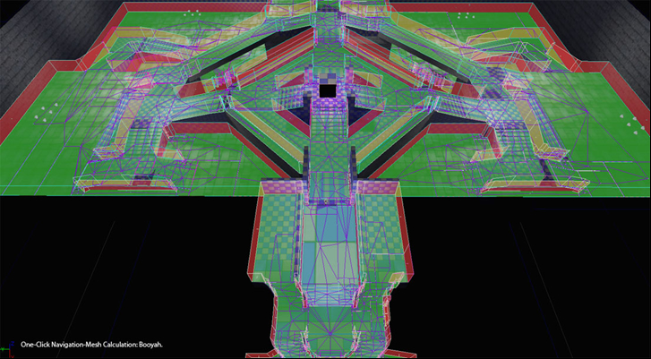
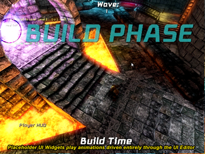
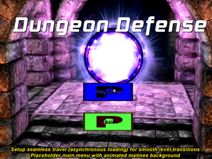
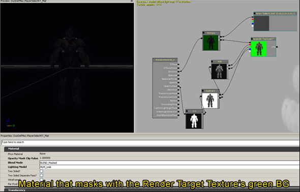
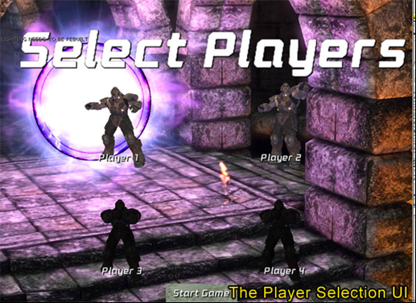
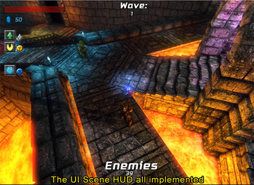
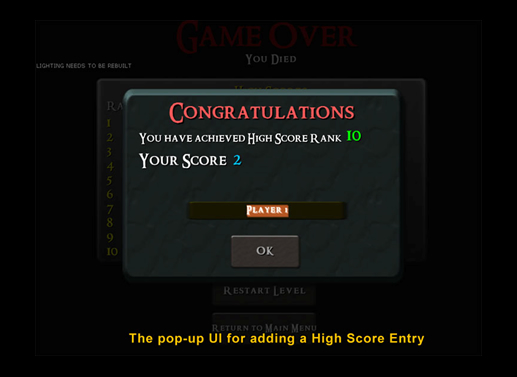

UDN
Search public documentation:
DungeonDefenseDeveloperBlogCH
English Translation
日本語訳
한국어
Interested in the Unreal Engine?
Visit the Unreal Technology site.
Looking for jobs and company info?
Check out the Epic games site.
Questions about support via UDN?
Contact the UDN Staff
日本語訳
한국어
Interested in the Unreal Engine?
Visit the Unreal Technology site.
Looking for jobs and company info?
Check out the Epic games site.
Questions about support via UDN?
Contact the UDN Staff
Dungeon Defense 开发日志
日志 1： 第一天
嘿，大家好， 这是一段令独立开发者振奋的时间。 不仅出现了数字发行，为小规模创意团队制作的各种创新游戏开放了庞大的市场，与此同时我们有了 Epic，它具有业内不可否认的最先进的游戏技术，在万众呼吁声中开放了他们的平台！ 作为一个资深的虚幻引擎的开发者，我已经加入到这种潮流中，并且在接下来的几个月中，我会倾尽全力投入到 UDK 上的一系列简单易懂的迷你游戏演示作品开发中。 我的目标是为一些成长中的社团成员提供一些开源资源，这些资源是 UDK 的各种类型游戏的一些例子。 这些资源应该是相对比较简单的大块代码和内容，对于虚幻的新手而言，它们可能比如同“满汉全席”一般的虚幻竞技场更容易理解。 闲言少叙，让我们开始“消化”下面的内容吧！ （嗯，我现在确实有点饿了） 在思考要从什么类型的游戏开始说起时，我注意到有些人似乎对于使用虚幻制作各种类型的第三人称游戏充满好奇心，其实只要您掌握了制作方法之后就会发现这是一件非常容易的事情。 此外，我刚刚成功完成了 PixelJunk Monsters 的一个回合，所以我还沉浸在“塔防”这种类型的游戏中。 通过策略性地构建诸如装备之类的东西击退成群的野兽，这个过程非常有趣。 因此，第一款迷你小游戏我准备做一个叫做“Dungeon Defense”的游戏，同时它将是一款 2.5D 视角呈现的（更像是 ¾ 透视）动作/塔防合成游戏。 您将会以法师还是“魔法师的学徒”的身份玩这个游戏，这个角色要时刻提醒自己在 老师不在的时候保卫魔法学校。 您将必须使用各种各样的“召唤”术在整个魔法学校进行魔防，并在防卫将要被摧毁的时候使用您的魔法棒攻击入侵者。 它应该是一款成功将动作战术和资源管理战术结合在一起的游戏，其中使用虚幻实现所有这些疯狂的想法只是“毛毛雨”。 就这样在周末，我进行一些规划我的资源和控件方案的设计工作，然后今天我正式开始编程工作。 首先，我开始实现我自己的 GameInfo、Pawn/Player、Player Controller 和 Camera 类。 下面我将会描述它们的功能： GameInfo 类中包含游戏的全局规则，目前为止在我的实例中我覆盖了它的默认值，在我的自定义 PlayerPawn 和 PlayerController 类中生成 (1)。 PlayerPawn 当然是世界中的物理角色，Controller 是其中会将用户输入传送到该 PlayerPawn 上的游戏性动作中的类。 关于相机类，我修改了 UpdateViewTarget 函数，以便可以将相机锁定在 Pawn 上方，而不是像虚幻竞技场那样直接通过它的眼睛看，此外，我稍微调整了玩家相机镜头的角度，这样它可能趋向于向您的目标方向旋转 (2)。 我使用了 Epic 的内置 RInterpTo 和 VInterpTo 函数分别处理 Rotator 和 Vector 插入，它们都非常好用。 它允许我缓慢地改变相机视角，从玩家的当前位置（和旋转量）进行一定的偏转，使得它看起来旋转的是如此平滑而不是很生硬。 在这个 PlayerController 中，我改变了 PlayerMove 函数，只改了 Rotation Yaw，同时没有 Pitch （为了是游戏的视角呈现出 2D 的特性，将视角束缚在 2D 平面内）。 起初，我只是尝试使用鼠标 delta 滚动鼠标的时候在每帧上一点点改变 Yaw，但是这样做感觉相当不很自然。 只是对于 PC 来说，它的误差太大。 我们只是这个角色可以直接看到我们所点的东西，不是吗? 所以，我编写了无与伦比的代码，它可以得到当前鼠标位置的“画布反射函数”的结果，然后再把 3D 向量射线重新投回到世界，并且找出玩家所指的到底是哪里 – 接下来使角色看向这一点。 (3) 当然，我还变换了相机旋转的输入方向，这样输入就会产生直观的“相机相对”运动（记住一直有效的 TransformVectorByRotation 函数，等价于“vector>>rotator”操作）。 Player-Pawn 与默认 Pawn 还是非常相像的，只是我们进行了一些有趣的 Animation Tree 处理使其可以在多个自定义完整的动画中混合，这样即使在我们尝试连续播放好几段动画的情况下也不会收到任何警告。 (4) 使用动画树系统后，我才知道我有多喜欢虚幻工具套装… 通过使用实时反馈配置您的角色混合视觉效果比只是进行硬编码好的多！ 但是这个东西只需要几小时而已，所以我不准备用一整天调用它。 下面，我开始致力于法师杖武器。 我细分了 Weapon 类并将其修改为支持在握住这个武器的时候进行“充电”，只有在释放之后才会开火（我希望 Staff 可以支持变化的冲锋攻击） (5) – 然后我细分了 Projectile 类使其同时可以支持力量变化的射弹，从程序上可以相应地缩放所有视觉效果。 (6) 我应该提到了我发现它对于生成“原型”引用比直接类引用有效 (7) -- 您可以在“Spawn”函数中指定一个 Archetype，例如，所谓的“Actor Template”）如果您为游戏性而生成 Archetype，那么您可以在编辑器中对您的游戏性对象的整个数据库进行实时配置，远比您每次都更改游戏的“默认属性”快。 同时它还可以使可视化配置值、交换媒介以及创建相同的核心类（只有属性不同）的多个变体这些操作变得容易很多。 稍后我们将会进一步介绍有关 Archetype 功能的更多详细信息，可以这么说它可以帮助我说明重复加载的功能。 此外，“运程控制”当然是另一种有用的实时迭代工具，您可以通过使用“-wxwindows”参数启动可执行函数访问它。 我将会在以后的帖子中讲述更多有关远程控制功能的信息！ 下面，我开始着手为我的第一个敌人准备 AI 控制器，它的名字叫做 Goblin（地精）。 我编写了一些“状态逻辑规则”，使得它们可以选择目标（基于所有可以实现返回目标加权的“界面”的 Actor） (8)，并且可以确定寻路的时间，转向目标的时间以及停止寻路/移动 & 发起攻击的时间 (9) 的。 稍后我将会进一步讲述有关 AI 脚本的详细信息。 此外我还专门为 Goblin 敌人实现了一个俏皮的 MeleeAttack 状态，它使用了动画通知启用/禁用跟踪（长方体扫描）一个每一帧玩家当前和先前的“手插槽”位置。 (10) 这可以确保 Goblin 所扫过的伤害区域实际上由动画及其计时决定，而不是由任何硬编码的值决定。 我还确保了每次扫射中 Goblin 只会伤害一个“被跟踪”的 Actor，通过维护一个当前扫过并对其进行检查的过程中所有被攻击的 Actor 的列表。 (11) 完成所有这些操作后，该近战攻击感觉真的很好，而且可以精确地传达动画的意思。 接下来，我迫不及待地实现了一个可以攻击敌人的基本“炮塔”。 我没有费事为这个简单的非运动 Actor 设计 AI Controller，相反，只是通过 Timer 选取一个目标（同时记住您可以使用状态逻辑来为每一个 Object 装备一个，而不仅仅局限于 Controller）。 (12) 我还将 LookAt Bone Controller 添加到这个 Turret 的 Animation Tree，使炮塔的顶部朝向它所选取的目标。 (13) 动画树设置完成之后，只需要使用一行代码告诉它方向即可。 是的。 随着游戏性实际开始逐渐形成，我继续进行编写并实现了敌人将会尝试作为主要目标消灭的“Crystal Core”(14)。 我使用了我为任何可作为目标的 Actor 创建的‘界面’ (15)，赋予 Core 一个特别高的优先级，这样敌人才会集中地靠近它，比靠近玩家或塔时的密度更大。 ‘界面’允许您使类完全不同的 Actor 共享同一套方法，这样他们才可以互动，或者使用同一种方法进行检查。 所以即使根据层次结构我的“Crystal Core”类与“Player Pawn”没有直接关联，他们还是可以同时实现由这个共享界面提供的同一个目标加权函数，通常情况下敌人 AI 有权限确定哪些实体是更重要的目标。 酷吧！ 最后，这个项目的美术总监，Morgan Roberts，组建了一个十分适合作为 Mage 的 Lair 的测试关卡，这样通过对 Kismet 进行一些设置，我创建了几波在其中反复生成的敌人，继续攻击核心位置。 (16) 这样我们就用了差不多一天时间完成了一个必需的可游戏原型。 嗯，这个游戏的玩法对于我来说是一个挑战，所以在接下来的几天，我需要认真地进行一些平衡性调整，当然还要实现一些额外的机制并对其进行细化。 多亏有了虚幻这个伟大的工具，使得实现这个操作的过程变得这么有趣！ 在接下来的帖子中，我将会讲述更多与上面简要提到的很多主题相关的详细信息，同时还会开始核查代码位或者我认为您将会觉得有趣或者有特殊用途的功能。 而且在我们可以为您提供一些可以观看的视觉效果后，我们也会增加一些截图。 谢谢，我希望你们很快都可以玩一下这个小游戏。 现在我要去吃我垂涎已久的匹萨了... -Jeremy日志 1： 文件参考信息
在这个日志中讨论的信息都来自于下面显示的文件，它们是 Dungeon Defense 源代码的一部分。 由逗号分隔的行编号表示文件中多个单独的行。 由连字符分隔的行编号表示文件中行的范围。- Main.uc: 618, 638
- DunDefPlayerCamera.uc: 240 - 248
- DunDefPlayerController.uc: 1561 - 1652
- DunDefPawn.uc: 222
- DunDefWeapon_MagicStaff.uc: 111
- DunDefProjectile_MagicBolt.uc: 24
- DunDefInventoryManager.uc: 13
- DunDefEnemyController.uc: 222
- DunDefEnemyController.uc: 764
- DunDefGoblinController.uc: 52
- DunDefGoblinController.uc: 32
- DunDefTower_ProjectileType.uc: 99
- DunDefTower_ProjectileType.uc: 95
- DunDefCrystalCore.uc: 19
- DunDefTargetableInterface.uc: 15
- DunDef_SeqAct_BasicActorSpawner.uc: 11
日志 2： 第三天
在制作 Dungeon Defense 的第二天和第三天，我集中精力改善了瞄准机制、AI 导航，并增加了一个很基础的直观系统，将具有防守型的“塔”放置在世界中。 让我来告诉您一些有关每个执行过程的信息！ 对于瞄准，我最初的基于鼠标的方案只是让玩家角色的 Yaw 看向您使用鼠标所指的地方。 这样做很好，除了在 3D 瞄准中 – 角色只会使用 Yaw 转向，因为没有实际的方法可以从一个（大部分）俯视视图中直观地确定 Pitch 的输入。 这样会在敌人在玩家低于或高于角色的时候出现问题，好吧，令人恼怒的是您无法击中它们。 所以，我实现了两个不同的修复，一个用于基于鼠标的方案，另一个用于游戏手柄方案，它们工作得不错。 对于基于鼠标的方案，我首先计算了角色的 Pitch 以瞄准与鼠标屏幕坐标的“反向投射”光线发生碰撞的点。(1) 一个简短的题外话： “反向投射”是指从 2D 屏幕空间转换为 3D 世界空间，例如从屏幕投射出一道光，而“投射”是从世界空间转换为屏幕空间。 两者都可以在虚幻中通过相应的 Canvas 函数实现，这些函数可以通过 Player 的 HUD 进行访问。(2) 那好吧，接下来我会在 Character 的 Animation Tree 中将这个 Pitch 值赋给 Bone Controller 设置，这样他可以躬身向上看或向下看。(3) 它为 PC 游戏提供了最准确的自然感受。 然而，我需要处理一下在您指向角色附近的时候他常常会向下看的问题，在这种情况下，他基本上都瞄准的是他的脚，因为这其实是您指着的地方。 我决定添加一个条件，如果您非常靠近地指向玩家，并且与您瞄准的对象高度差异不大，那么就让角色向前看。(4) 这样可以消除当您的鼠标离他近时，他一边靠近一边看着他的脚。 当然，我使用插值来设置 Bone Controller 的 Yaw 和 Pitch，因此瞄准点发生快速变化后，角色不会粗糙地折断。 另外，我在我的 Pawn 中存储了实际瞄准点，(5)然后在我的武器中查看它以便在这一点明确瞄准这个射弹，简单地通过将它的 Rotation 设置为 Rotator(TargetPoint-ProjectileSpawnPoint) 同时将 Velocity 设置为 Speed*Normal(TargetPoint-ProjectileSpawnPoint) 来完成。(6) 这样会使定位射击看上去感觉上是适合于 PC 游戏的， 但是仍然保持着您想要的简单的俯视视图。 对于游戏手柄控件方案，我不得不进行一些变革。 因为玩家没有快速准确地瞄准设备，所以不可能看到玩家指向的具体位置。 但是我们仍然需要一些 3D 瞄准方式！ 所以我决定实现一种自动瞄准函数，它可以确定在最大范围内最适合瞄准的目标（如果有），然后将瞄准点设置为该目标的位置。(7) 由于自动瞄准仍然使用瞄准点系统，它适用于现有的“观看”方法，它是我们为 PC 的控件方案而设计的，唯一的不同之处是选择瞄准点的方式。 所以为了选取最佳的自动瞄准目标，我开始对 Player 进行 OverlappingActor 检查以便整理自动瞄准范围内的所有‘敌人’类型 Actor，然后遍历它们，看看哪一个潜在的目标最靠近我并且距离我所看的方向最近。 最靠近并距离我所看的方向最近的目标（被当做“Normal(TargetLocation – EyeLocation) dot Vector(Rotation)”计算的），包括每个的限定角度和权重，将是最理想的目标。 只要我调整限额和权重，这个自动瞄准选择方法就可以正常工作了，现在使用游戏手柄，您将会在您所瞄准的地方（会有误差）进行垂直的自动瞄准。 我还在角色的 Spine（脊椎）骨骼上向目标方向添加一个一点小小的额外 Yaw 旋转量，这样子弹就不会由于自动瞄准上的点积容差出现向侧面斜飞过去的现象。(8) 现在游戏手柄控制方案达到了和使用鼠标一样的水平！ 题外说明，我使用了 DebugSpheres 在我的自动瞄准目标处进行绘制，这有助于确定这个选择方法的运行状况。 事实上，我一直使用 DebugSpheres、DebugLines、DebugBoxes 进行分析，我强烈推荐在您制作原型阶段使用它们，甚至让代码自己在您的类中绘制它们。 使用自定义“bDebug”布尔变量就可以关闭它们，所以以后您可以在遇到问题或想要进行进一步调整的情况下将它们重新开启。 在世界中使用与 3D 操作相关的代码可视化发生的情况对于游戏可玩性编程人员来说只是小事一桩。 下一步，我决定修改我的 AI 寻路例程，从使用虚幻的长期 Waypoint-Pathnode（路点-路径节点）导航系统（‘them apples’) 到新的导航网格物体系统。 哎呀 @#$#！ 这些做起来超级容易，并且产生的结果也让我疲惫的眼睛觉得不可思议。 您只需在您的关卡中扔下这个 Pylon Actor，建立路径，然后它会自动生成这些繁复的东西。 当（快得令人吃惊）计算完成后，您已经有了一个在您的环境中完全实现的路径网络，如下所示：
当关卡结构改变时无需重建路径节点的位置，基本上您只要按一下“重建路径”，您放置的 Pylons 将会做那些繁复的计算所有的有效路径的工作！ 至于实际使用的网格物体导航系统，它不可能是简单的（这是从其他的基于网格物体导航的技术经验中得来的结论）。 下面这些代码基本上是所有使用到的通过 AI 控制器来走过一个导航网格物体的导航结果：
function InitNavigationHandle()
{
if( NavigationHandleClass != None && NavigationHandle == none )
NavigationHandle = new(self) class'NavigationHandle';
}
event vector GeneratePathToActor( Actor Goal, optional float WithinDistance, optional bool bAllowPartialPath )
{
local vector NextDest;
//将我们的返回值设置为等于我们的目的地 Actor 的位置。
//在可以直接到达或者寻路失败的情况下，我们就会返回它。
NextDest = Goal.Location;
if ( NavigationHandle == None )
InitNavigationHandle();
//如果 Actor 没有直接到达，那么尝试找到下一个朝向它的导航点。
//否则，我们就只会返回它的位置，直接去那里。
if(!NavActorReachable(Goal))
{
class'NavMeshPath_Toward'.static.TowardGoal( NavigationHandle, Goal );
class'NavMeshGoal_At'.static.AtActor( NavigationHandle, Goal, WithinDistance, true );
if ( NavigationHandle.FindPath() )
NavigationHandle.GetNextMoveLocation(NextDest, 60);
}
NavigationHandle.ClearConstraints();
return NextDest;
}
//WithinRange 只会检查距离 TargetActor 的短距离，
//否则，只是不停地走向 GeneratePath 告诉我们去的地方。
while(!WithinRange(TargetActor))
{
MoveTo(GeneratePathToActor(TargetActor),none,30,false);
Sleep(0);
}
日志 2： 文件参考信息
在这个日志中讨论的信息都来自于下面显示的文件，它们是 Dungeon Defense 源代码的一部分。 由逗号分隔的行编号表示文件中多个单独的行。 由连字符分隔的行编号表示文件中行的范围。- DunDefPlayerController.uc: 1575
- DunDefHUD.uc: 122
- DunDefPlayer.uc: 304, 329
- DunDefPlayerController.uc: 1611
- DunDefPlayer.uc: 304
- DunDefWeapon.uc: 134, 157
- DunDefPlayer.uc: 241
- DunDefPlayer.uc: 315
- DunDefEnemyController.uc: 938
- DunDefPlayerController.uc: 577
- DunDefTowerPlacementHandler.uc: 340
- DunDefPlayerCamera.uc: 109
- DunDefPlayerCamera.uc: 163-174
- DunDefTowerPlacementHandler.uc: 89-135
- DunDefTowerPlacementHandler.uc: 304
- DunDefTowerPlacementHandler.uc: 438, 474
- DunDefTowerPlacementHandler.uc: 468
- DunDefTowerPlacementHandler.uc: 219-238, 396-404
- DunDefTowerPlacementHandler.uc: 492-516
- DunDefTowerPlacementHandler.uc: 240-249
- DunDefTowerPlacementHandler.uc: 524-525
- DunDefPlayerController.uc: 706
- DunDefTowerPlacementHandler.uc: 691
- DunDefTowerPlacementHandler.uc: 786, 795
- DunDefTowerPlacementHandler.uc: 801
- DunDefPlayerController.uc: 602
日志 3： 第七天
嘿，大家好， 自从最后一个日志文章开始，Dungeon Defense 团队已经谈论了很多主题，几乎无法弄清楚要从哪里开始动笔！ 但是让我们总结一下从上一篇帖子开始的最后几天中完成的内容，然后我将会对这些主题中的每一个主题进行详细说明：- 添加了敌人掉落的刚体“魔法令牌”，附近的玩家会真空吸引它们，这些“魔法令牌”是游戏中召唤塔并施加其他符咒的可消耗资源。
- 添加一个系统，它可以通过在结构体的可编辑数列（一个由数据控制的系统）中的一系列原型升级您的“魔法”武器
- 添加了分屏支持和动态本地玩家加入。
- 添加了一个自定义 UI 类，可以支持一个由编辑器控制的动画系统（位于 Epic 现有 UI 动画基础设施的顶部）
- 添加了一串功能占位符 UI 场景： 一个主菜单、暂停菜单、游戏结束 UI、单独的 Player HUD、共享的全局游戏信息 HUD 以及加载画面。
- 设置我们的游戏逻辑规则，使其可以支持异步加载（“无缝变换”），这样我们就可以在背景中关卡进行加载的时候对过渡画面进行动画处理。
- 添加了一个新的角色动画节点（一个 BlendBySpeed 变体，可以选择指定作为“运动”的物理状态并且达到速度乘法器的极限），上身混合支持我们的玩家角色 Animation Tree（动画树）。
- AI 改进： 在 AI 确定已经可以直视目标的时候，使它们停止寻路，周期性地重新估算它们的理想目标，并加入一些自动放故障装置，检测“停滞”状态并尝试返回到导航系统。
- 添加了一些 Kismet 动作，可以支持一个完整的塔防游戏性循环，其中包含：
- 一个很酷的潜在（也就是“会随着时间变化的”）‘Wave Spawner’动作，它将会通过表示敌人群组的任意数列生成不断涌现的敌人，在玩家杀掉一波敌人后相应地会出现输出链接。
- 可以动态调整敌人的数量以及敌人出现的时间间隔的操作，这样游戏才可以随着时间推移难度越来越高。
- 在传递自定义信息时打开 UI 的各种操作。
- 一个可以在 Core 确实死亡以后立即检测“损失情况”（核心毁灭），这样在这种情况下我可以提早启动过场动画。
那么，让我们密切关注上面的一些主题，从刚体魔法令牌开始说起。 这非常简单，通过继承 Epic 提供的 KActorSpawnable 类，我利用已经设置的这些类将刚体物理应用到一个基于它的 StaticMesh Component（在其上面设置了凸面碰撞）的 Actor 上。(1) 在我的子代类默认属性中，我简单地重写了它的“bWakeOnLevelStart=true”（这样它会立即掉落），然后将它的 bBlockActors 设置为 false，这样玩家可以实际穿过物体，而不会卡住。 我为这个‘ManaToken’提供了一个小而精的静态网格物体（在它的 Archetype 中），然后使我的“DunDefEnemy”在它的 Died() 函数中生成的数量有所不同（相对于 Archetype 而言）。(2) 我还使用一个缩放的 VRand()、随机方向向量、对每个掉落的令牌的冲力，使它们可以向敌人外部飞。 我在 Player 内部发现了附近的魔法令牌，并将所有发现的都“收集”起来（很明显，销毁它并将它的“魔法”值添加到我们的 Player Controller 总数）。(3) 最后，为了避免实际上必须触摸每个令牌才能收集它，我在 Player 中（并不是在每个令牌中！）添加了一个周期性 OverlappingActors 测试查找所有附近的令牌，标示它们使用一个朝向玩家的力吸入它们。我同时还在它们的速度不在玩家方向的时候添加了一个稍微反转的力，它基本上就是使用一个“各向异性阻力”帮助使它们更加快速地朝向玩家。(4) 总之，在令牌开始到处飞的时候，它最后会产生一个令人满意的真空效果。现在为了支持游戏过程中的武器升级，我在我的 PlayerController（基本上锁定输入并使玩家角色播放一个召唤动画）中扩展了我的“召唤塔”状态。(5) 我调用了这个子代状态“UpgradingWeapon”，并且通过重载一些对应的函数简单地让它播放一个不同的动画和视觉效果。(6) 使用这种方法，我可以在实现我感兴趣的新功能时使用我的初始状态的所有功能。状态层次结构时一个对于游戏性编程超级好用的概念，而且从语言角度上讲是一个非常独特的 UnrealScript！ 所以只要在我按下“升级”按钮之后，我就会让我的玩家进入播放独特的动画的状态，但是现在我确实需要对武器做点什么。 我添加了一个名为“Weapon Upgrade Entries（武器升级项）”的结构体数列，其中包含有关每个升级关卡的信息： 魔法消耗、描述、升级消耗的时间以及对于将要生成或者升级完成后就提供给玩家的武器的最重要的实际 Weapon Archetype Reference（武器原型参考指南）。(7) 为什么我使用结构体（其中只包含值）而不使用类呢？ 嗯，在编辑器的属性编辑区中可以动态创建结构体，因此我可以在编辑器中设置我的‘武器升级项’值，并且使整个系统数据处于控制状态。 下一步，我添加了一个“枚举变量”，使其包含一个与每个受支持的升级关卡（最多 5 个）对应的项，然后只需在玩家每次更新的时候选取下一个枚举值（当前枚举值 +1），并将它作为获取结构体数列中的系一个“武器升级项”的索引。 接下来在我的 PlayerController 中，在升级结构体项要求处于“升级武器”状态（循环播放升级动画）的时候一直处于这种状态，然后这个时间过期以后，我生成了新武器原型（并且销毁了以前的原型）。(8) 它工作起来一切正常，所有值都包含在 PlayerController Archetype 的“武器升级项”结构体数列中意味着可以在编辑器中进行与武器升级消耗和时间相关的精细调整的迭代，通过远程控制实时进行。 目前，它的效率很高！
我还需要支持分屏，因为既然游戏开始真正使一个人感到有趣，那么四个玩家就应该感受到 4x 的乐趣！ （或者是诸如此类） 支持多玩家分屏分屏事实上非常简单，在此感谢 Epic 提供的功能强大的框架。 我只需要处理任何还没有与玩家相关联的控制器的“按下开始”输入，然后使用这个新的控制器 ID 调用“CreatePlayer”函数。我处理了在 InputKey 函数的 Input 子类中没有玩家的游戏手柄的“按下开始”输入。 当玩家按下游戏手柄上的 Start 后，这个按键名称将会被传递到 InputKey 函数，而且在这个函数中我可以使用相应的 ControllerID 调用 CreatePlayer。(9) 我使用 InsertInteraction() 将这个新的 Input 类添加到了我的 ViewPortClient 类的“Interaction”列表，就是这样。(10) Player #2 按下了 Start，而且是在弹出的又一个 PlayerController 和相关联的 Player-Pawn 中 – 然后视窗会自动相应地进行分割（如果您不需要分屏，您可以在您的 ViewportClient 类中重写 UpdateActiveSplitscreenType()(11) 函数，在这种情况下，第一个玩家的相机视角就是要绘制的视角）。 现在多个本地玩家可以动态地享受到之前只有单个玩家才能体验到的东西！ 在线多个玩家需要使用 Actor Replication 系统进行更多的操作 – 虽然这里没怎么讨论 Epic 提供的现有框架，但是我们将会在接下来的安装过程中提到相关内容。
下面，我需要为游戏处理一些基础函数用户界面，这样它才可以作为一个完全可以进行游戏的系统开始运行，从主菜单开始一直到完全胜利为止，而不仅仅是一个单独的关卡。 我看了一下 UI 动画系统，它的功能强大，但是只可以通过 DefaultProperties 进行编辑。 所以通过使用 UnrealScript 功能，我将这些 UI 动画类的值封装到结构体中兵使它们可以在我的扩展 UIScene 类中进行编辑。(12) 当我的自定义 UIScene 激活后，我将这些结构体值复制到动态创建的 UI Animation 对象中。(13) 这样，我取得了在编辑器中可以使用动画值进行编辑和实验的好处，同时仍然使用 Epic 创建的现有 UI 动画系统。 通过恰当使用这个新功能，我创建了大量占位符 UI。其中有一些，例如 Player HUD UI(14) （通过我的 HUD 类打开），指的是在每个玩家的视窗中绘制，而其他 UI 是全局全屏的并且不属于任何一个玩家。 我将一些函数写到了我的 GameInfo 类，以便直接根据永久性游戏的状态显示 Global UI（例如，在构建阶段余下多少时间，在战斗阶段余下多少敌人等等）。(15) 我为 UI 创建了一些相当小的（占位符）Open 和 Close 动画（在编辑器中进行调整）。

满足条件后，我决定我希望对我的加载 UI 进行动画处理(16)，这样我们就可以从主菜单（实际上是一个可以打开主菜单 UI 的关卡）愉快地过渡到游戏性关卡： 希望‘这个过程永远不会令人乏味’。 它可以使用 Epic 的 SeamlessTravel 功能，它可以在背景中加载一个关卡，同时将另一个关卡作为一个临时的“过渡”地图。 在我的案例中，过渡地图打开了我的 Loading Screen UI 场景的 – 而且它会一直显示到过渡地图关闭为止，也就是在将这个目标关卡完全加载到背景中的时候。 您唯一需要做的是调用 WorldInfo.SeamlessTravel(17)，然后将会进入在您的 INI 中指定的 Transition Map（过渡地图），同时将最终的目标关卡加载到背景中。 简单并且功能强大。
当然，您还会具有进行被称为“关卡动态加载”的功能，这个功能指的是在游戏进行的过程中动态加载部分关卡（例如，在您进入第一个房间后加载建筑物的内部场景），或者取消加载过期的部分（例如当您进入一个内部建筑物后取消加载其外部场景）。 尤其适用于大型世界游戏，这是一个不同的过程，这个过程通过 Kismet 和世界编辑器本身进行控制，下面是 Epic 提供的完整文档： 关卡动态加载指南 接下来，我注意到实际上可以通过使用角色的运动速度动态调整来提高我的角色运动动画速率。 Epic 已经为它设置了一个 Animation Tree（动画树）节点，叫做 BlendBySpeed，但是我需要为它添加一点新的功能： 我要让我的节点只会调整玩家处于特定物理状态（例如，在地上行走的时候）时的速度，同时速率范围具有最大上限，这样在玩家碰巧由于某种原因确实运动得很快的情况下（例如，由于爆炸产生的巨大动量），这个运动动画最后看上去不会很古怪。 幸运的是，这个操作很简单，我只需从 Epic 自己的“AnimNodeScalePlayRate”中继承我的新动画节点类，然后为它添加一个 Tick 函数，同时在这个 Tick 函数中检查它的 Owner Skeletal Mesh 的 Actor 的当前速度（做我感兴趣的限定和物理检查）。(18) 我创建了一个 TickableAnimNode 界面，支持这个新的 Tick 函数(19)，并且使用它的 OnBecomeRelevant() 函数中的我的 Pawn 类注册这个节点（在 OnCeaseRelevant() 中撤销），这样可以使这个 Pawn 知道要 Tick（更新）这个节点。 使用您自己的类扩展引擎的基类，然后使用 UnrealScript 为它们添加新的功能，这样您就可以从框架中获得最强的功能，这个框架在您开始添加 Kismet 功能的时候也是整洁的。 下一步要做的事情！ （我还添加了一个进行过滤的 CustomAnimation 节点，它只可以作用于角色的上半身，将‘AnimNodeBlendPerBone’作为它的父代，设置为从‘脊椎’骨骼向上进行过滤。 这样我的角色就可以播放反应动画，而不会影响到腿部的运动。）(20) 所以对于本地多个玩家，着重于功能性 UI，基础资源和武器升级系统，我想要将其与可播放的“塔防”游戏循环（从开始到结束）放在一起。 它将需要一点关卡脚本才能顺利进行（我会对其进行硬编码，但是这将会很无趣，不可以扩展到更多的游戏类型和关卡中！）。 因此，我试着用 Kismet 控制我的“Build and Combat构建和战斗”循环，实质上就是： 为玩家提供一些时间进行构建（通过 UI 通知他这个时间），然后生成几波敌人（通过 UI 通知他敌人数量），接下来在定期调整敌人数量/构建时间间隔的时候重复这个循环，这样游戏才会越来越难，直到它变得基本上势如破竹。 是吧？:) 起初，我想要使用隐性 Kismet 操作生成一波又一波的敌人，这是一个不可以立即完成/输出的操作，但是会在内部不断进行更新，而且只有在一些内部逻辑确定可以完成的时候才会完成。 我创建了我自己的“Enemy Wave Spawner”操作（扩展 SeqAct_Latent 来得到‘ Update()’函数(21))，这个函数具有一个结构体数列，其中每个结构定义了会在操作开始后的特定时间出现的一波敌人。(22) 只有在所有这些敌人全部被杀害之后，“Wave Spawner” Kismet 操作才算完成并会激活它的最终输出。(23) 下面是一些特别有趣的内容。 在我刚刚使‘Wave Entries’结构体数列可以直接在 Action 的属性内部进行编辑的时候，我知道我需要在多个生成器之间传递‘Wave Entries’，定期调整它们的值，并且根据 UI 提供的信息（“杀害的敌人数量”）处理它们(24)。 所以我决定创建一个新的 Kismet Variable 类，SeqVar_EnemyWaveEntries，它只包含其本身内部的结构体(25)。 这个 Kismet Variable 对象是作为输入到 Wave Spawner Kismet Action 中的 Variable Input 使用的对象，它接下来会复制这个结构体供自己使用。(26) 使用一个 Kismet Variable 对象封装这个 Wave Entries 结构体，而不只是 Wave Spawner 操作内部的直接可编辑值，我可以可视化地将 Wave Entries 传递给 Kismet。 它使我将 Kismet 中的‘Wave Entry’” Variables 连接到我编写的另一个操作‘ScaleEnemyWave’。 ‘ScaleEnemyWave’采用一个 Wave 项和一个浮点数作为输入，分别代表敌人数量和要调整这个 Wave 的间隔时间。(27) 通过在战斗循环后使用一个‘乘以浮点’ Kismet 操作更改这些浮点，我可以使这个游戏根据回合逐渐变得更难。 我计划将来使用这个系统进行更多的操作，例如允许一波又一波敌人具有随机的原型值（这样您就会永远都不确定将要面对哪一群敌人），并且为这个调整值使用一个 RandomFloat 变量，这样生成的敌人数量和步速通常都会略有不同。说到底，还是要感谢 Kismet，有了它才可以使用“在编辑器中播放”迭代平衡关卡，同时我们可以构造更多独特的序列，例如，在具有里程标意义的敌人波数中间添加其他事件（也就是说，每消灭 5 波敌人，您就可以进入与 Super Enemy（超级敌人）对战的状态，这特别简单，因为我们的游戏性对象是 Archetype）。 在接下来的几天中，通过 Kismet 调整 Build-Combat-Wave 循环将会是一次令设计师感到非常有趣的体验。 直到下一次进行调整为止… 持续创建！
日志 3： 文件参考信息
在这个日志中讨论的信息都来自于下面显示的文件，它们是 Dungeon Defense 源代码的一部分。 由逗号分隔的行编号表示文件中多个单独的行。 由连字符分隔的行编号表示文件中行的范围。
- DunDefManaToken.uc: 8
- DunDefEnemy.uc: 208
- DunDefPlayer.uc: 351
- DunDefManaToken.uc: 62
- DunDefPlayerController.uc: 812
- DunDefPlayerController.uc: 1266
- DunDefPlayerController.uc: 69
- DunDefPlayerController.uc: 1316-1320, 1280
- DunDefViewportInput.uc: 15
- DunDefViewportClient.uc: 474
- DunDefViewportClient.uc: 226
- DunDefUIScene.uc: 11
- DunDefUIScne.uc: 36
- DunDefHUD.uc: 27
- Main.uc: 223, 333, 482, 132
- Main.uc: 482
- Main.uc: 488
- DunDef_AnimNodeScaleRateBySpeed.uc: 17
- DunDefPawn.uc: 285
- DunDefPlayer.uc: 163
- DunDef_SeqAct_EnemyWaveSpawner.uc: 162
- DunDef_SeqAct_EnemyWaveSpawner.uc: 14
- DunDef_SeqAct_EnemyWaveSpawner.uc: 198, 231
- DunDef_SeqAct_OpenKillCountUI.uc: 31
- DunDef_SeqVar_EnemyWaveEntries.uc: 10
- DunDef_SeqAct_EnemyWaveSpawner.uc: 176
- DunDef_SeqAct_ScaleEnemyWave.uc: 53
日志 4： 第十天
又见面了，我强悍的虚幻拥戴者！ 自从上一篇日志后，在过去的几天甚至包括假期，我们的小团队取得了巨大的进步。 我将会您提供一个概述，然后我们将会深入研究有关每个主题的详细信息。所以首要的是，让我告诉您有关主菜单上的这些 Render Target（渲染目标）的信息。 我需要一个界面友好的登录 UI，在这里您应该可以看到游戏中的人，同时所有人应该在主菜单进行登录，这样他们应该可以随时准备开始游戏（当然，您还可以只通过按下 Start（开始）按钮在游戏过程动态添加一个新玩家）。 我还需要巧妙地使用 3D 角色直观地反映游戏中的人物。 所以，我起初在我的菜单关卡环境中添加了 4 个骨架网格物体，在远处空处只会渲染它们并且没有背景元素。 我将“SceneCapture2DActor”放置在它们中每一个前面，它是一个可以将场景从视图中渲染为 Texture 的类似于 Camera 的 Actor，与此同时为它们中的每一个赋值使其使用一个独特的 Render Target Texture。
- 我们为我们的酷角色设计使用了第一个美术作品（骨架网格物体）！ 非常厚颜无耻地异想天开的陈词滥调！ 现在我们只需要为动画装配它们，然后我们将会替换令人绝望的 UT 机器人，这样做应该会强化游戏本身的风格感觉。 在进一步构建环境的过程中，我们还获得了我们的基础“Mage Staff（魔法）”武器模型，甚至在使用临时视觉效果的情况下它也可以正常工作。
- 我忍不住在主菜单上实现了一些奇妙的 Render Target（渲染目标）使用方法。 显然，主菜单现在可以为 1-4 个玩家显示每个“玩家角色”的动画图片（它最终将会是主要角色的颜色互换版本），这样可以表明哪个角色已经“登录”游戏。 在主菜单中，您可以在任何连接的游戏手柄上按下“Start（开始）”，而该玩家将会登录到后续游戏，并且会被反映在这些“渲染为贴图”角色响应播放的‘活动’动画中（在没有被选择的情况下，它们是灰调的‘空置项’）。 做得漂亮！
- 继续在主菜单上做文章，我创建了一个小的 Canvas（画布）粒子系统，它可以从光标的位置发射粒子。 该系统也完全适用于其他 UI 效果。
- 我修改了 matinee 和实现的游戏指令和游戏结束过场动画，在 Player Controller 上设置相应的输入阻塞状态，这样它们在过场动画中时就可以运动/射击。 我还为玩家按下 开始/退出 的时候会跳过过场动画这个问题实现了自定义解决方案。
- 我对 Player HUD 进行了大量处理，比如，实现了整个过程，其中包括： 基于材质的生命/进度条（自定义 UI 控件）、状态反应 Spell Icon（召唤图标）以及进行动画处理的 Mana Token（魔法令牌）指示器等等。我还是实现了 HUD 覆盖层（动态 Canvas 绘制）使生命进度条悬浮在 Towers/Core 上面，同时还实现了一个可以指向正遭到袭击的 Core 的旋转路点。 这些全部可以在 2-4 分屏中正确播放，耶！
- 为我们的武器实现了撞击贴花，其中包括使用 Epic 提供的功能非常强大的“Material Instance Time Varying（随时间变化的材质实例）”（名字很长）系统。
- 为远程攻击敌人实现了基本功能，作为我们的“Archer（射手）”装备。 状态继续使这个功能可以轻而易举地实现，不过为了可以精确地得到我想要的行为我对 AI 进行了一些调整（其中包括瞄准预测、盘算不准确度以及一些我喜欢称之为射弹方向“乏析引数”的东西）。
接着，我创建了一个使用了这些 Texture 中某一个的 Material。 然后我创建了一个这个 Material 的 Material Instance Constant，这样我可以简单地为其他 Render Target 换出 Texture 参数，不需要创建 4 个独特的基础 Material。 Material Instance Constant 按字面意思是每个都具有唯一“参数”（通常是 Scalar、Vector 或 Texture 参数）的 Material “实例”，它们可以根据实例换出值，而不需要每个都包含一个 Material 的完整副本。 它允许您在游戏运行的过程中动态地更换诸如此类的参数，得到动态-反应 Material 效果，同时它还保存了内存，从而使管理 Material 资源变得更加容易（您不需要复制整个 Material，只需要更改一些数值）。

在 Material 内部，我将 Render Target 贴图传递到 Emissive 输出，但是我同时通过使用设置给我的相机的“绿色”背景颜色剪切这个 Opacity Mask，这样这个角色只有在最终图片中才可见，在背景中不可见。 也就是说，使用这个 Material，我将只会看到我的角色网格物体，一个一个像素的，而不是整个 Render Target Texture 的正方形图片。 我还添加了一个 Material Scalar Parameter 控制最终图片的亮度，这样我可以在取消选择角色的时候使角色变暗。 接下来我为添加我的选择 UI 的每个 UI Image Control 赋予了一个唯一 MIC（从 Players # 1 到 4）。 注意，我实际上使这些角色网格物体使用一个继承于 Epic 的 SkeletalMeshActorMAT 的自定义类（在您想要按要求播放动画，但是不想要一个完整的 Pawn，那么它是一个合适的动态骨架网格物体 actor 类）。 我使用一个自定义类的原因是这样我可以通过代码轻松地播放混合的动画(1)，实际上应该可以使用 Kismet 和 Matinees 将它们都拼凑在一起，但是与立即登录事件的玩家进行沟通会变得更难。 事实上，我没有直接在玩家角色登录图片中使用一个‘UI Image’控件，而是创建了一个扩展的‘UI Image’的自定义控件。 它允许我为它添加必需功能来管理相应的 Character Mesh（角色网格物体）以及与玩家登录对应的 MIC，不需要在其他地方进行这项操作。(2) 创建从 Epic 大量基础类继承而来的自定义 UI 控件是在您需要添加特定功能时非常有效的方法。 通过使用这些自定义 UI，我添加了大量功能。:) 无论如何，最后一步是在代码中捕获“Press Start（按下开始）”按钮事件，然后创建一个玩家对它做出反应。 这就和将我自己的函数赋给我的 Player-Select（玩家选择）UI 场景类的“OnRawInputKey”代理（记住在您希望它们具有自定义 UnrealScript 功能的情况下使用自定义 UI 场景类！） 然后在这个函数中，我只检查了‘InputKeyName’参数是否是游戏使用的其中一个 Start 按钮，如果是，我会使用该 Controller ID 创建一个新的玩家（使用 ViewPortClient 的 CreatePlayer 函数），当然要在该控制器 ID 还没有一个玩家的情况下。(3) 那么，我的自定义 UI 场景会通知我的自定义 Player-Select Image Control（玩家选择图片控制）更新它们自己(4)，同时它们每个都会and they each take care of 更新它们的 Material（材质）并在它们对应的 3D 角色上播放动画(5)，前提是它们找到了一个与它们的指定索引对应的本地玩家。 随即动画处理屏幕上会对本地玩家加入做出反应的角色！
完成上述操作后，我忍不住使用光标发射出的某些魔法粒子对主菜单稍微进行了一下调整（我即将要使用一个自定义贴图进行替换…）。 对此，我重写了在我的游戏的 ViewPortClient 中的 PostRender() 函数，然后我检查了我的游戏的 MapInfo 看看 Current World（当前世界场景）是否已经被标记为一个“菜单”级别。 如果它是菜单级别，那么我会使用 Canvas.DrawMaterialTile 手动绘制由粒子结构体数列定义的“粒子”(6)。 每个结构体包含粒子相关信息，它的位置、大小、速度、加速度和生命周期(7)。 我更新了 ViewPortClient 的 Tick() 函数中的粒子，使用它们的速度增加它们的 Position（位置），应用它们的 Acceleration（加速度），减少它们的生命周期，并且在它们过期的时候重新设置它们。(8) 稍后我计划扩展 Canvas Particle System 框架支持预定义的“defaultproperty”动画值，这样我可以具有会对输入事件做出反应的 UI 粒子等等，使点击整个菜单过程更加令人满意。 我喜欢 Epic 的框架非常灵活，可以支持自定义诸如此类事件的解决方案，不只是 UE3 具有这样功能强大的工具，在我想要“自定义”并创建我自己的小粒子系统方法，我还可以灵活地使用 UnrealScript 进行这项操作！ 说到游戏过程，我希望使关卡的开头部分更加引人入胜，同时为玩家提供一个有关他负责防守的环境的概述。 Matinee 是创建此类过场动画的公认工具，而且使用这个框架后创建确实简单了不少。 Unreal 的 Player Controller 类默认情况下将应用包含一个“Director”轨迹（被看做是一个‘过场动画’matinee，与一些用脚本编写的游戏性序列相对）的 Matinee 的视图。 然而，您必须正确阻塞输入以阻止玩家在过场动画期间到处乱走（同时也需您还希望在他的角色与这个序列无关的情况下隐藏它）。 这与在您的 PlayerController 中重写“NotifyDirectorControl”事件一样简单，其中有一个代表玩家是进入还是离开过场动画序列的参数，如果他进入 director 控件，那么我会将名为“InCinematic”的状态进栈到可以忽略大部分输入函数的玩家控制器（而且可以选择隐藏 Controller 的 Pawn Actor），然后他会离开 director 控件，我退栈这个状态。 就这样，我们不会再在“过场动画”过程中到处乱走。 (9) 但是，我还希望玩家可以跳过过场动画（‘过场动画不可跳过的游戏’– 任何时候都会使玩家感到不快的原因！）。 为了实现这个目标，我重写了“StartFire”执行函数（以及一个与在我的游戏中按下 Escape 键相对应的输入函数）。 我没有射击这个武器（它在过场动画播放的过程中毫无用处），而是遍历了关卡的 kismet 中的所有 SeqAct_Interp (matinees)，找到一个其 Director 轨迹当前控制我们的 Player Controller，然后将该 Matinee 的 PlayRate 设置为 10000，这样就会使它在单帧中结束（接下来将 PlayRate 重新存储到初始值）。(10) 这样就可以立即结束了吗？:) 现在我的游戏使用了一些好看的过场动画，那么是时候该集中精力改善玩家的 HUD。很明显，将其从我的 HUD 类的 PostRender 的某些 DrawText 调用中移出，移动到一个将会使用可以对游戏性事件作出反应的经动画处理图片的实际 UI Scene。 我想要在我的新 uber-HUD 上做的第一件事情是制作一个合适的进度条样式图片，用它表示 Health（生命值）百分比以及施加符咒时间。 我决定自己动手，使用一个我虚构的 Material，它可以遮罩一个与“百分比”标量参数相对应的进度图层（也就是说，您可以告诉 Material Instance 您想要得到的百分比，它会在一个完整帧内只显示“那么多”的进度条图片）。 因为这是一个 Material，所以我可以在 UI Scene 内的 UI Control 中使用它（针对 Player HUD）(11)，而对于动态 Canvas 覆盖层使用 DrawMaterialTile(12) （用于我的塔 actor 顶部的浮动生命值显示器）。 顺利完成。 在出于此种目的使用 Material Instance Constant 时唯一需要注意的事情是，您必须为您想要绘制的每个进度条创建一个“唯一的”Material Instance Constant（将初始 MIC 作为每一个的“父代”）。 否则，像我的“父代”值一样设置一个 MIC Parameter，它会作用于每个进度条（因为它们全部都共享同一个 MIC）。 所以在这个实例中，我只是让每个 UI HealthBar 实例(13)（或者实现了“易损”界面的 actor(14)）初始化它自己的“新” MaterialInstanceConstant，并将初始 MIC 设置为它的 Parent（父代）。 这样，我就可以使生命值/进度条系统足够灵活，在 UI Scenes 和浮动的 HUD 中都可以使用，同时还支持绝佳的动画效果，所以它看起来很“神奇”（例如，它具有多个滚动混合的图层，哈哈）。 下面我需要更新了与玩家当前所做的事情相对应的视觉状态的 Spell Icon（符咒图标），主要表示诸如是否可以承受这个符咒，是否现在使用，是否在施加的过程中，或者是否可以施加这样的状态。 我还希望这些符咒图标可以动态显示可以施加该符咒的相应输入按钮。 对此，我从 UI Image 中继承了“Spell Icon（符咒图标）”，并且我向它添加了一些参数，这样它就可以包含一个对两个其他 UI Label 的引用，一个用于显示符咒将要施加的“魔法”量，而另一个用于显示一个按下后可以使用该符咒的文本按钮（或者游戏手柄按钮图片图标）。 每当 Player State 改变时“Spell Icon”控件都会更新，查询 Player Controller 了解相应符咒的可用性(15)，然后将会根据结果更新它的视觉效果（颜色/不透明度），代表每个唯一的状态，在需要的时候还可以代表相应标签内的值(16)。 下面两个条件可以使这个操作更加容易： (1) UI Control 可以在 Scene 内包含一个对其他 UI Control 的引用(17) 以及 (2) UI Control 知道它的 Parent UI Scene，同时这个 Parent UI Scene 也知道它的 Player Owner。 由此推断，可以将这个结果指定给拥有这个 UI HUD 的玩家，不需要添加其他引用就可以得到这条信息。 我还发现在我使用“Percentage Owner”定位计算以及保留图片的原始长宽比需要的“Scale Height”长宽比大小调整选项时分屏中的所有图片可以工整对齐（例如，按钮图标！）。 这个分屏验证事实上可以轻松地通过直接在 UI 编辑器内切换所有分屏 UI 视图模式的功能进行，该功能极其强大。 最后，我再次使用了我前几天放到编辑器中的“UI Animation”系统，然后为这些控件中的每一个创建了动画序列以对状态变化作出反应，所以它们会跳跃来对状态变化作出反应（例如，在禁用它们或重新启用它们的时候），同时颜色会随着时间发生变化，而不是瞬间发生。 它添加了细致巧妙的反馈，我非常享受这个过程，因为它完全是 UI 编辑器/PIE 内由数据控制的迭代。
最后，我希望在“巢穴”（防守它是您的主要目标）遭到攻击的时候玩家能够知道，同时对应地显示一个浮动的 HUD 路点指示器指向 Core。 对此，我在 Crystal Core（我的 Player HUD，在它的 PostRender，可以遍历所有可以实现这个界面的 Dynamic Actor，并且在对其调用一个 DrawOverlay 函数）上实现了我的“HUD 覆盖层”界面。 在它新实现的 DrawOverlay 函数中，Crystal Core 会检查它最近是否受到袭击。 如果是这样，Core 的 DrawOverlay 会通过一个路点图标调用 DrawRotatedMaterialTile()，并将 Rotation 算作朝向 Core 的投射屏幕位置的方向（从画布中心开始）。 而对于传递到“Rotated Material Tile”的位置，我计算了它在这个 Rotation 方向上与屏幕中心的偏移，这样这个路点将会围绕这个中心做圆圈运动，类似于指南针。(18) 由于我使用了一个 Material（而不只是一个 Texture），我可以对这个 Waypoint Icon 进行动画处理，在这个 Material 中，使其跳跃并快速运动，这样就会注意到它！ 下面，我需要向 Magic Staff（魔法）射弹的撞击再添加一些“Oomf”。 我已经在撞击点生成了一个实用的粒子发射器（包含光源组件），那么我还可以再添加什么呢？ 贴花宝贝，贴花！ 除了静态贴花外，我还想要使用 Epic 的功能强大和命名高级的“随着时间变化的材质实例”系统，这样这些贴花的动画效果会更加生动逼真。 根据 Projectile Impact（射弹撞击）生成贴花很简单： 在我的射弹“爆炸”函数中，我只需命名 WorldInfo.MyDecalManager.SpawnDecal()，在 HitLocation 和与我的射弹碰撞的反向 HitNormal 中传递，以及与贴花大小和生命周期相关的对应值。 当然，传递到 SpawnDecal() 中，我还会从我的 Projectile Archetype（射弹原型）传递一个“Material Interface（材质实例）” – 这个通用引用可以是一个静态的“贴花材质”或一个动态的“MITV”。 如果是一个 MITV（我使用 GenericMaterialReference.IsA(‘MaterialInstanceTimeVarying’进行检查），我会通过它创建一个“新的” MaterialInstanceTimeVarying。 这是必需的，这样它才可以为每个我生成的贴花进行独一无二的动画处理。 我将 MITV 的时间间隔设置为“GetMaxDurationFromAllParameters()”（这样它可以延续的时间与它的 Material 动画告诉它的时间一样长），将其传递给 SpawnDecal() 函数，然后大量增加经过动画处理的贴图！ (19)MITV 允许美工人员轻松地控制淡入淡出贴花（只需添加一些关键帧，随着时间插入由 1 到 0 的‘Opacity（不透明度）’参数），但是可以在下面的更多情况中使用它们： 例如，在渐渐变为黑色之前可以发出红通通的光的子弹孔，或者诸如循环复杂的颤动材质这样的非贴花用途，甚至是根据游戏事件动态进行动画处理的材质。 只要我设置了简单代码在贴花上生成它们对射弹撞击做出反应后，美工人员就可以控制这个系统进行很多他们可以想象出来的操作。 我希望 Dungeon Defense 的 VFX 美工以后能够喜欢这个功能。 最后，我回到已经实现的更多核心游戏性内容，在这个实例中，添加一个远程攻击敌人可以与我的近战肉搏相辅相成。 “远程攻击”敌人 pawn 本身几乎是一个从基础敌人 pawn 继承的敌人类，但是它的 AI Controller 有一些独一无二的功能。 除了有一个广阔的“攻击范围”外，即超过这个范围就会停止射击射弹（当然），在这个实例中，我还扩展了通用“攻击”状态，这样可以在攻击过程中在正确的时间生成 Ranged（远程）射弹（尤其是在播放射击动画的时候从 Pawn 中错过动画事件后）。(20) 我希望我的通用 Attacking（攻击）状态可以处理更多的抽象逻辑规则，例如如果敌人在攻击的过程中受到伤害输出这个状态，为间隔检查设置“Last Attacked Time（最后被攻击时间）”值，同时特定的“RangedAttacking”状态将会进行开动射弹的特定动作（而我的 Melee（近战）敌人的“MeleeAttacking”状态（在先前的博客帖子中提到过）会进行近战跟踪）。 状态继承，我在玩家符咒施加系统中也广泛使用了这种方法，它允许您将更多常用功能设置为抽象状态，然后实现这些具体针对各个情况的状态的子代版本。 正如我前面提到的那样，它是一个非常强大的系统，UnrealScript 语言设计独有，而且的确可以提高效率并加强代码设计。 在任何情况下，为了真正生成这个射弹，我进行了一些有趣的数学运算，它们可以根据玩家的当前速度预测敌人应该瞄准玩家射杀的位置(21) （好吧，我相信 Epic 自己的 SuggestTossVelocity 函数也可以完成这项操作，但是我希望我自己可以着重学习我的 Kinematics 101！）。 但是，我不需要这个敌人的瞄准完全没有误差，那样就没有乐趣了，所以我故意在射击角度上动了点手脚（通过小的随机旋转角度变换射击目标位置）。(22) 最后，我将射弹射击方向限定为在 Pawn 当前 Rotation（旋转角度）周围的 15 度角范围内，这样在敌人向您的两侧射击射弹的地方就不会出现任何暗算技能。(23) 我允许这些 15 度角自由旋转，但是，由于我的“projectile fudge factor（射弹乏析因数）”使敌人不需要完全面向您，这样才能适当地瞄准从而构成威胁。 它可以正常工作，“嘘”，没有人会注意到。 :) 相关内容已经在前几天总结过了。 在强大的虚幻技术帮助下，我们游戏开发进度得以加快（好吧，是超快），而且不久我们将会为大家献上一个非常棒的游戏演示。 我们将会随时告知大家开发进度，在一次更新之前… 继续开发游戏！
日志 4： 文件参考信息
在这个日志中讨论的信息都来自于下面显示的文件，它们是 Dungeon Defense 源代码的一部分。 由逗号分隔的行编号表示文件中多个单独的行。 由连字符分隔的行编号表示文件中行的范围。
- DunDefPlayerSelectUICharacter.uc: 24
- UIImage_PlayerSelect.uc: 38, 48
- UI_CharacterSelect.uc: 97
- UI_CharacterSelect.uc: 65
- UIImage_PlayerSelect.uc: 38, 48
- DunDefViewportClient.uc: 108
- DunDefViewportClient.uc: 14
- DunDefViewportClient.uc: 122
- DunDefPlayerController.uc: 1713, 1726
- DunDefPlayerController.uc: 1832, 1809
- UIImage_HealthBar.uc: 55
- DunDefDamageableTarget.uc: 137
- UIImage_HealthBar.uc: 16
- DunDefDamageableTarget.uc: 154
- UIImage_SpellIcon.uc: 81
- UIImage_SpellIcon.uc: 90
- UIImage_SpellIcon.uc: 11-14
- DunDefCrystalCore.uc: 41-69
- DunDefProjectile.uc: 78-103
- DunDefDarkElfController.uc: 85-107, DunDefDarkElf.uc: 56
- DunDefDarkElfController.uc: 31, 71
- DunDefDarkElfController.uc: 62, 63, 71
- DunDefDarkElfController.uc: 74
日志 5： 第十三天
嗨，大家好， 这些天一直忙着开发游戏！ 我得到了 2 个星期的开发成果，使用 Frontend（前端）工具对它进行烘焙，然后 Packaged（打包）对我们的最佳测试员队伍（好吧，他们是我们的朋友和家人 ?:)）发行。 机制已经固定成型，最后我们可以悠闲地坐着享受游戏过程，同时记录一些难度调整。 它看上去很不错，是一个非常有趣的迷你游戏，其中最令我兴奋的是您在几个星期后就可以玩到这款游戏了！ 至于过程实现方面，这里提供了一个与开发进度的重要内容相关的概述，其中主要是关于如何走到这个‘里程碑’的过程：既然您已经得到了这个大图片，那么让我们来更加详细地翻阅其中的每个部分吧。 Kismet 功能 在多人游戏中我发现的一件重要的事情是游戏非常简单，太简单了，事实上，因为具有 4 个玩家可以使呈现更多群敌人这件事变得更加简单。 所以为了在不同规模的游戏中保留相对一致的难度级别，我决定根据当前玩家的数量调整敌人的数量并（减少）一波一波敌人群之间间隔的时间。 但是，我不希望只进行线性调整，我想要进行自定义调整，也就是我可以根据波和玩家的数量进行调整；这样将会保证我可以在规定时间内找到理想的“魔法编号”。 因此，我针对“Scale Float for Player Count”编写了一个 Sequence Action（序列动作），其中包含一个用户定义的要调整的值的浮点动态数列（数列中的每个索引与玩家编号减 1 一一对应）。(1) 这个动作还可以作为将会被调整的 Float Sequence Variable 的输入。 激活后，这个动作会使用 GetNumPlayers() 值（在当前世界的 GameInfo 中），然后锁定相应的调整浮点数列索引（将索引限定在数列长度减 1 的范围内）。 它可以将这个输入浮点变量值与这个调整值相乘，然后激活 Kismet 输出链接。(2) 只要连接到我控制敌人数量和生成一群一群敌人之间的间隔时间的主要 Kismet 变量后，工作原理与符咒一样；现在我实际上可以平衡这个游戏，无论玩家数量是多少?:) 此外，我在论坛上注意到有人很好奇如何根据体积更改任意 PostProcess Material（后期特效材质）。 PostProcessVolumes 当前只支持预创建的 Epic PostProcess Effect（后期特效），但是它可以通过一些 Kismet（或者通过创建您自己定义的 Volume 类并使您的 PlayerController 在它被触摸/取消触摸的时候在其上面调用一个事件）添加对任意用户 Material Effect（材质特效）的控制权限。 我选择了 Kismet 途径，因为我想要根据任意游戏标准切换我的自定义 PostProcess 事件，我的情况时每当过场动画播放的时候，我希望激活我创建的胶片颗粒材质效果。 要进行几个步骤才能完成上面的操作，其中最简单的方法是只需通过 PostProcessEffect 上的 bShowInGame 属性立即开启和关闭这个效果。 为了得到 PostProcessEffect 对象，我遍历了 Current World Info（当前世界信息）中的所有 LocalPlayerController（或者在已经传递一个 Instigator 的情况下使用 Instigator），然后使用它们的 LocalPlayer 的 PlayerPostProcess 链根据名称查找我正在寻找的 PostProcessEffect。 找到后，根据需要触发 bShowInGame。(3) 然后，完成这些之后，我决定我要随时支持 向上&向下 插入某些特效值，使启用/禁用之间的过渡可以很平滑，而不是突然打开/关闭。 这个对我来多了些挑战性，但是还是完全在掌控之中。 第一步是使这个动作是一个 SeqAct_Latent，而不仅仅是一个 SequenceAction，这样它才可以获取 Update() 函数随时调整后期特效值。(4) 接下来，我选择存储当前被“插入”到两个数列中其中某一个数列的 PostProcessEffect，“FadeUp”数列用于进行“显示”，“FadeDown”数列用于进行隐藏。 在 Update 函数中，我只遍历了这些数列中的每一个元素，然后在每帧中添加或减去命名的 Material Scalar Parameter（材质标量参数），直到达到目标标量值。 只要达到目标值，我就会将 PostProcessEffect 项（实际上一个结构体还包含插入值）从 Up/Down 数列中删除。(5) 在这两个数列中再没有其他数列后，我在可以完成隐性操作的 Update() 函数中返回 false。(6) 它工作得很好，可以获得我想要的平滑自下而上淡入/自上而下淡入，但是我必须处理以下两种特殊情况：
- 添加了更多的 Kismet 功能： 通过参数插值触发任意后期特效的隐性操作（所以您可以随时得到一个光滑的淡入/淡出效果）。 我同时还添加了一个操作可以通过游戏中的玩家数量调节任意 Kismet 浮点变量（通过玩家数量的乘数数列），这对于多人游戏难度平衡非常重要，可以确保这里的敌人更多，同时当出现更多敌人的时候一波一波敌人之间的间隔时间更少，但是没有必要进行固定的线性调节。
- 我添加了一个新的 Tower（塔）类型： “Blockade”，它可以作为敌人易于毁灭或在其周围四处游荡的障碍物（使用一些基本的动态寻路）。 我还创建了一个 Attacker Registration（攻击者记录）系统，这样任何可作为目标的对象都可以指定一次允许多少敌人攻击它（剩下的将会继续移动，寻找找到其他目标）。 这样当敌人遇到一个 Blockade 时，它们中的一些将会攻击它将其撤销，与此同时其余敌人将会继续在它附近游荡！
- 添加了游戏可选 Friendly Fire（人性化开火）检查，UT 中已经包含这个功能，但是因为我使用的不是 UT 类，所以我自己写了下。 还在玩家开始位置选择中添加了一些其他的逻辑规则，这样游戏将会在每个新加入玩家所有有效开始位置间进行循环，这样一来可以保证 4 个立即加入的玩家获得他们自己唯一的开始地点。
- 我修改了要添加到我自己的‘酷’按钮和字体中的 UI Skin，同时还在所有游戏序列和菜单中添加了音乐盒 SFX。 对于 SFX，我将一个 AudioComponent 添加到我的标准 Effect Actor，这样所有我立即生成的 Visual Effect（视觉特效）都可以支持音频（假定它们都已经是原型，这使得在大多数游戏事件中添加音频变得轻而易举，剩下的一些声效通常会通过 Anim Sequence Browser（动画序列浏览器）被绑定到 Animation）。
- 我烘焙并打包了这些内容，就像烤蛋糕那样。
“Dynamic Blockade”对象 返回到游戏中，我希望再添加一个“塔”类型增加游戏性深度。 我决定添加一个通过要求敌人在其周围四处游荡（或者有时候攻击它）使敌人速度放慢的“Blockade”塔。 因此，我需要在障碍物周围支持动态导航。 对此我的解决方法可能不一定是最完善的，但是对我来说十分实用。 首先，我创建了我的 Blockade 对象，它只是可以实现定位界面的可毁灭对象中的其中一个（所以敌人可以攻击它）。 对于这个 Blockade Actor 特殊的一点是它可以重载这个“冲撞”事件。 当被冲撞时，Blockade 会检查其他 Actor 是否是一个‘敌人’类型，如果是，那么会在它的 EnemyController 上调用一个“MoveAroundBlockade”函数，传递它本身以及一些参数（与它碰撞的参数和碰撞法线）。(9) 这就是 Blockade 所进行的操作。 真正的魔法在这个 Enemy Controller（敌人控制器）中，可以回复这个“MoveAroundBlockade”通知。 但是，首先是一个附注： 出于这种目的使用这个 Bump（冲撞）事件的优点是不需要任何活动的逻辑规则，但是缺点是只有在敌人真正碰触到敌人时才可以触发，对于我来说，这也不算是什么问题，但是如果我不希望在我决定盘旋于这个封锁对象周围之前具有敌人实际触碰它这个视觉缺点，那么我可以在敌人控制器的运动逻辑规则中使用 Trace 检查，检查向前运动方向上的所有 Blockade 类型 actor。 这样做的优点是看起来效果更好（在与封锁障碍物碰撞之前敌人会在其周围盘旋），但是缺点是稍微慢一点。 现在，在我创建的 Enemy Controller 的 MoveAroundBlockade 函数中，我首先运行了一些逻辑规则，这样可以检查敌人目前并没有“瞄准”这个 Blockade Actor，或者是否已经尽量在它周围游荡，如果是这样，会避开（任何情况下在它周围游荡都是很愚蠢的）。(10) 此外，我会使用 Trace（轨迹）检查这个 Blockade Actor 是否确实位于敌人以及它的目标目的地（或者是使用寻路时的下一个运动位置）之间。 如果不是，我也会避开。(11) 这样可以避免敌人尝试在已经通过倾斜的侧面碰撞触碰的障碍物周围游荡；我们只研究我们直线运动路径上的 Blockade。 如果 MoveAroundBlockade 函数使其通过了这些检查，那么我会选择要到达的对象避让点，确定是在碰撞法线方向的左边还是右边，移出 Blockade 的碰撞范围内的距离。 具体地说，在左边还是在右边有敌人当前的“对象避让方向”决定（通常是先从‘右边’开始）。(12) 这个“对象避让方向”在敌人无法找到一个要移动到的有效地点的情况下将会转变。 通过查看在这个地点下面是否有地面检查有效性（使用 Trace）(13)，还可以通过查看 Epic 的 FindSpot() 命令返回的值是否为 true（FindSpot 是一个可以尝试在一个理想位置或其附近找到一个有效的几何体不相交的位置）。(14) 如果找到了一个有效对象避让点，那么我会将 Controller 设置为“MovingAroundBlockade”状态，这个状态可以简单地使它直接导航到这个目标位置。 如果我们是无效的，那么我会转换方向并再次尝试(15) （如果另一个方向行不通，那么我会避开… 希望一些其他敌人以后会销毁这个 Blockade！）。(16) MovingAroundBlockade 状态只会使用“MoveToDirectNonPathPos”到达这个对象避让点(17) （假定不需要寻路，因为对象避让距离非常小，同时我们已经检查了确保在它周围没有任何碰撞几何体，并且在它的下面有土地，等等）。 我设置了一个 4 秒的取消计时器，以防由于某种原因无法到达对象避让点。(18) 在敌人到达这个点时，它会返回到 Seeking 状态，这个状态会将它重新放回到朝向它的初始 Target 的寻路上。 当然，它后来可能会击中“另一个”Blockade（例如，如果相互之间两两相邻），这样将会使它进入下一个障碍物的“MovingAroundBlockade”，继续在相同的方向运动将会有希望使敌人最终摆脱您的 Blockade。 这个方法，虽然非常基础，但是适用于大多数情况。 甚至是在 Blockades 布局十分复杂的情况下，敌人在同一方向围绕每个障碍物运动的时候他“不可触摸”一个接一个的障碍物，如果他击中了一个不可通行的障碍物，那么他会切换方向，然后试着走另一条路。 它会导致的主要情况是在 Blockade 网络复杂和足够长使敌人的初始目标位置位于 Blockade 的凸面网路中的一些任意位置，根据环境敌人可能从来不会到达这个点。 换句话说，它不是真正的寻路，而只是对象避让行为，其中没有关于路径结构的整体概念。 虽然暂时这些就足够了（特别是由于 Blockade 是可销毁的，所以敌人就很可能会攻击它们），以后将会对 Nav Mesh（导航网格物体）动态轮廓导航进行完善，这是我在接下来的几周内将要探索的内容。 攻击者记录 事实上，没有方法可以限制将会攻击附近障碍物的敌人数量，障碍物避让系统也派不上什么用场，因为敌人通常只会攻击障碍物，而不会在它们周围盘旋。 要获取我想要的行为，也就是使一些敌人攻击一个 Blockade，而其他敌人在其周围盘旋，我需要实现一个“Attacker Registration（攻击者记录）”系统限制可以同时瞄准一个给定 Blockade（或者任何可作为目标的 Actor）的敌人数量。 我只是通过将另外一些函数添加到我的“Targetable”界面（RegisterAttacker 和 UnregisterAttacker）就足以完成上述操作。(19) 当然，这样做需要在所有使用这个界面的类上实现新的函数。 幸运的是，我实际上关心 Registration（记录）的对象（也就是 Blockade，也可能是其他可放置 Tower）全部都在我的可销毁对象类层次结构内部，所以我只需要在一个地方真正实现这些新的函数（我的 Pawn 还是用了这个 Targetable 界面，但是它们目前不关心 Attacker 记录，所以对于它们我只添加了这些新界面函数的存根版本）。 在我的 DamageableActor 类中，RegisterAttacker 函数只将 Attacker 添加到一个 Attacker 数列（如果还没有显示在数列上），然后 UnregisterAttacker 会删除它。(20) 此外，我改变了 Targeting Desirability 函数，在 Attacker 数列的长度 >= Attacker 的最大数量（一个我在默认属性中添加并指定的变量）时可可取返回 -1 （意味着不可作为目标）。(21) 最后在我的 EnemyController 中，我在我的 SetTarget 函数（每当敌人 AI 选取一个新的 Target 时调用的函数）中新的和以前的 Target 上分别添加了对 RegisterAttacker/UnregisterAttacker 的调用。(22)，然后在 Controller 被销毁的时候将这个 Target 设置为 None，这样它会在敌人被杀死的时候调用 Controller。(23) 整个过程就是这样！ 现在我的可毁灭 Actor 会指定可以同时 Target 它们的敌人数量，而其他敌人可以忽略这些 Target 向前运动。 这尤其适用于 Blockade，我将其限制为两个 Attacker。 然后，Blockade 周围剩下的敌人将会尝试在其周围盘旋，这是我想看到的情况，使 Blockade 成为一个可以有效减低敌人速度或保卫重要位置的技术，而不是可以刀枪不入的技术。 误伤 & 起点选择 当我开始进行更多的多玩家测试时，我发现误伤是个问题，我们将会两败俱伤，而我们的本意是只伤害敌人（好吧… 从背后攻击您的“友军”有点意思.. 这是我为什么留下这个选项的原因）。 UT 类具有一个内置的误伤检查功能，在这个游戏中的做法是通过查询它的 GameInfo 类根据受害者和攻击者调整伤害，然后 GameInfo 会检查他们的团队并在他们同步的情况下相应地降低伤害。 但是，我想要使用我自己的方法，而不是使用 GameInfo 调整伤害，我只向我的 Targetable 界面中添加了一个名为“IgnoreFriendlyFireDamage”的函数，它将 Instigator 作为 Input（输入），检查团队，然后根据他们是否在同一个团队以及 GameInfo 当前是否允许 Friendly Fire（误伤）返回 true 或 false。(24) 然后我修改了基础类中的 TakeDamage 声明，检查“IgnoreFriendlyFireDamage”的结果，并且在为 true 的情况下避开（不使用伤害）。(25) 这个方法的好处是通过重写“IgnoreFriendlyFireDamage”函数，某些类可能会选择在一般情况下禁用误伤，不考虑整体游戏设置，例如，敌人将永远不会彼此伤害。 让敌人从中占了便宜。 下面我发现在 4 个玩家生成的过程中，他们都可以选择相同的（有效）生成点，而且在游戏开始的时候会显示在各个玩家的顶部。 我希望我的游戏可以循环生成点，这样每个玩家都可以保证生成一个唯一的位置，前提是这里有足够的生成点。 要实现这个操作，我只需在我的 GameInfo 类中重写 ChoosePlayerStart()，然后检查当前 Spawn Point（生成点）是否已经在一个“Used Spawn Point（用过的生成点）”数列上进行测试（如果是，跳过它检查下一个）。 选择一个生成点后，将它添加到这个“Used Spawn Point”数列，如果没有发现生成点，那么清除这个 Used Spawn Point（用过的生成点）数列，然后再检查一次。(26) Bingo, spawn point cycling worked. 当然，实现这个操作的另一个方法是创建一个新的 Spawn Point（实际上是‘PlayerStart’）类，这个类有一个可以判断它是否已经用过的布尔变量，然后在没有发现 PlayerStart 的情况下清除所有这些布尔变量，甚至会编写一个自定义生成点选择系统，不使用任何内置功能。 Epic 的类框架其中一个优点是通常有一种可以完成给定任务的“最简单”方法，而可以处理它的自定义方法往往有无数个，您所选择的具体方法由您自己决定。 * UI 植皮* 现在该是发布我的小进度版本的时候，但是 UI（特别是我的按钮）仍然使用的是具有它自己的月球表面岩石坑（moon-rock-crater）默认贴图的 DefaultSkin。 我想要为我的游戏提供一个基础的主题样式，所以该是创建我自己的 UI Skin 的时候了。 首先，我将 Epic 的 DefaultUISkin 资源复制到我自己的软件包中（将其命名为 DunDefSkin.DefaultSkin），然后更改 DefaultUI.ini 的“UISkinName”关键字使其指向它。 此外，我在 DefaultEngine.ini 内的 StartupPackages 列表中添加了 DunDefSkin，这对于保证它作为可以启动的应用程序加载这一点很重要。 既然我已经为我的游戏指定了一个自定义 UI Skin，那么我会启动 UnrealEd 的 UI Skin 编辑器使用我自己的按钮贴图替换这个月球表面岩石坑贴图（只需为它的所有状态交换 Default Image Style（默认图片样式） ->Button Background Style）按钮背景样式）的‘贴图’值）。 我还为“点击”事件添加了一个 SoundCue 引用，这样所有我的按钮在您点击它们的时候会有一些悦耳的声音反馈。 同时我还导入了一个自定义 True Type Font 并将其设置为在 Default Text Style（默认文本格式）中使用的字体。 既然 UI 至少看到了一点 theme-y，那么该是时候在准备版本之前着重处理 Sound！ 声效和音乐 没有声音的游戏是不完整的，因为这些声音可以为各式各样的游戏性事件提供合适的反馈信息。 音乐也是一个道理，可以使完全置身于情景中… 无论您想让他们做的是什么！ 幸运的是，声音和音乐都可以使用虚幻的通道轻松集成。 这里有各种各样可以使您的游戏中有声音的方法，在这部分工作中我采用了其中几个方法（不是全部）。 首先，我导入了我的 Wav 并使编辑器自动为它们创建 Cue（非常方便），注意所有这些我想要在 3D SPACE 中播放的声音都是使用“Attenuation（衰减）”节点创建的，因此他们具有 3D 定位 & 衰减的功能。 下面，我将一个 AudioComponent 添加到我的视觉效果（发射器）Actor 中，它可以在所有我的重要游戏性事件的各种 Archetype（原型）中生成(27)。 它将会允许每个这些视觉效果具有一个在它的 Archetype（原型）中指定的对应声音。 我浏览了每个 Visual Effect Archetype（视觉效果原型）并将需要的声效设置到它的 AudioComponent 属性中，然后使所有具有 3D 声音的视觉效果发出声音。 在没有使用视觉效果的极少数情况下，我可以设置要在动画中播放的声效（通过使用一个“AnimNotify_Sound”动画数列通知），活着只是通过代码播放它（使用 Actor.PlaySound()，它还有一些好用的 FadeIn 和 FadeOut 选项）。 此外，我还创建了一个 PlaySound kismet UI 动作(28)，它只会调用 WorldInfo.PlaySound() 以防 UI 需要播放没有在整个 Skin 的声音列表中定义的 Custom Sound（自定义声音）。 在 30 分钟内，我在整个游戏中为所有重要事件播放了 3D 声音，当然还添加了游戏性反馈。 下一步我想要弄点音乐。 高昂、婉转、激动人心的音乐！ 或者诸如此类的东西。 无论是什么音乐，使用虚幻后它就只是导入 Wav 这么简单（如果是长音乐轨道，您可以使用较低的压缩质量，这样它会压缩得更加紧凑），然后通过 Kismet 的“Play Music Track（播放音乐轨道）”操作进行播放，它也具有淡入淡出值。 通过代码，它就和使用包含这个新的音乐值的 MusicTrackStruct 参数调用 WorldInfo.UpdateMusicTrack()(29) 一样简单。 出于不同的目的我使用了这两种方法，现在我的游戏音乐根据关卡中的所有重要事件的淡入淡出效果很好。 最后添加了一部分感情控制后，我准备打包发行。 烘焙和打包 成为一个制作版本能手非常简单： 打开 UnrealFrontEnd，通知它所有您的游戏使用的地图（在我的实例中，还指定了用于无缝转换的 Entry Level（入口关卡）、Menu Level（菜单关卡）& 我的 Transition Level（过渡关卡）。 我还需要将我的主要“UDKGame”脚本软件包添加到在我的 DefaultEngine.ini 中指定的 StartUpPackage，因为我要依赖这个脚本软件包进行游戏初始化，而不是 UT 脚本（注意您可以有多个脚本软件包，它们可以被特定关卡单独引用，但是包含您自定义的 GameInfo 的任何软件包中都应该位于 StartupPackage 中）。 然后单击“烘焙”，接下来 Frontend+UDK 会生成所有优化版本内容文件。 最后点击“软件包”，然后它会询问您的游戏名称，针对安装用户界面。 点击 OK（确认），将会为您安装（装在游戏需要的任何可再发布文件中），在完成安装后将您的安装 EXE 放入您的主要目录中。 将这个宝贝传送给您的朋友/家人/beta 测试员/发布者，然后您可以继续您的工作。 ABC-123 确实不错。 这样又结束了使用虚幻快速完成开发过程的高效率工作日。 现在游戏已经真正成形，而我们开始倾注大量心血在 内容添加 & 调整 阶段，所以它达到了我确信要将它显示给人看的点。 一直进行调整，很快您将可以为我提供您自己的反馈！ -Jeremy
- 如果在尝试为该特效添加 FadeUp/Down 时 PostProcessEffect 已经在 FadeUp 或 FadeDown 数列上，那么在添加一个新的 FadeUp/Down 之前需要将其从以前的数列中删除。 否则，我们将会同时进行两个插值，这样会弄得乱七八糟。 这是在 kismet 上快速触发 FadeUp/FadeDown 输入（也就是说在通过 Touched/Untouched 被链接到这个操作的触发器体积的边缘来回跳动）的情况下可能出现的状况。 (7)
- 为了获取合适的分屏支持，Action 支持采用一个 Instigator，而且只更改它的 PlayerController.LocalPlayer 特效（作为一个选项，它还可以更改每个玩家的特效）。 但是，Material Effects 需要唯一的 MIC 才能拥有唯一的参数值，与此同时目前不可以直接在 Postprocess Chain Editor（后期链编辑器）内部进行指定。 因此，我编写了一个函数检查 Material Effect 的 Material 是否唯一（通过检查与这个 Effect 相关的 Material 是否是一个 MIC，或者是否是一个其 Parent 不是 MIC 的 MIC，这两种情况对我来说意味着它还不是唯一的）。 如果它不是唯一的，我会为它创建一个新的 MIC，将其 Parent 设置为初始 Material，然后将这个新的 MIC 应用于这个 Material Effect。(8) 这样，我们就得到了合适的分屏唯一 PostProcess 更改。 哎呀！
日志 5： 文件参考信息
在这个日志中讨论的信息都来自于下面显示的文件，它们是 Dungeon Defense 源代码的一部分。 由逗号分隔的行编号表示文件中多个单独的行。 由连字符分隔的行编号表示文件中行的范围。
- DunDef_SeqAct_ScaleFloatForPlayerCount.uc: 10
- DunDef_SeqAct_ScaleFloatForPlayerCount.uc: 22-26
- DunDef_SeqAct_TogglePostProcessEffects: 70-79
- DunDef_SeqAct_TogglePostProcessEffects: 240
- DunDef_SeqAct_TogglePostProcessEffects: 171-233
- DunDef_SeqAct_TogglePostProcessEffects: 236, 248
- DunDef_SeqAct_TogglePostProcessEffects: 139-155
- DunDef_SeqAct_TogglePostProcessEffects: 137, 117
- DunDefTower_Blockade.uc: 21
- DunDefEnemyController.uc: 456-460
- DunDefEnemyController.uc: 492-509
- DunDefEnemyController.uc: 522-530
- DunDefEnemyController.uc: 536
- DunDefEnemyController.uc: 563
- DunDefEnemyController.uc: 538, 545
- DunDefEnemyController.uc: 549
- DunDefEnemyController.uc: 656
- DunDefEnemyController.uc: 648, 602
- DunDefTargetableInterface.uc: 26, 29
- DunDefDamageableTarget.uc: 65, 73
- DunDefDamageableTarget.uc: 61, 93
- DunDefEnemyController.uc: 259, 272
- DunDefEnemyController.uc: 217, 283
- DunDefTargetableInterface.uc: 21, DunDefPawn.uc: 67
- DunDefPawn.uc: 148
- Main.uc: 274, 286
- DunDefEmitterSpawnable.uc: 154
- DunDef_UIAction_PlaySound.uc: 13
- Main.uc: 156
日志 6： 第十七天
再次见面了，UDK 开发者同行们！ 我们已经进入 Dungeon Defense 开发最后阶段，过去的几天我一直专注于润色 AI 行为，后来我的注意力转向了一些可以重新玩的战役计分系统。 此外，我集成了一些最近刚刚完成的美术作品，这个开发过程中最令人振奋的部分是您有机会看到美术作品为游戏性注入生命力，同时通过虚幻技术渲染的效果很好。不管怎样，让我为您提供一个有关代码编写方面的概述，接下来我将会详细地介绍每个主题：
那么开始吧，首先有关 AI： NavMesh 系统非常有用，但是它无法自动解决每个边界情况。 很明显，如果角色被可导航区域击倒，那么寻路将会失败，接下来要怎么办呢？ 嗯，非常简单： 在 NavigationHandle.FindPath() 返回 false 但是仍然无法直接到达您的目标，使您的 AI 控制器切换到附近可以直视到的目标（或者任何导航节点），然后直接朝这个目标走（使用 MoveToDirectNonPathPos()，它不使用寻路），直到 NavigationHandle.FindPath() 再次返回一个有效路径为止。 该简单解决方案为我们的游戏解决了这个问题，现在敌人可以在任何地方被击倒，而且仍然会返回到可游戏区域！(1) 此外，我添加了一个计时器检查敌人每秒是否明显地移动了一段距离，如果不是，我会在继续寻路之前直接向左或向右移动他。(2) 它解决了当敌人全部都朝同一个目标前进的时候会被堵塞的情况，现在他们可以有效地在彼此周围活动。 处理了这些寻路问题后，我想要使敌人对那些正在攻击他们的对象的反应可以更大一点，而不只是根据距离和静态期望值决定他们的目标定位。 简而言之，我想要一个基础“Aggro（仇恨）”系统，它会使敌人更加仇视那些刚刚伤害他们的目标（不，我不玩魔兽世界 :)。 这个过程并不难，只要进行一些数列管理即可。 首先，我将一个“Recent Attackers（近期攻击者）”的 Dynamic Array（动态数列）添加到我的 Enemy Controller（敌人控制器）中（同时通过 Controller 的 NotifyTakeHit 事件将一个 Attacker（攻击者）添加到该数列中）。(3) 然而，不是只存储对 Attacker（攻击者）的直接引用，我而是将其变成一个名为“AggroEntry”其中包含有关这个 Attacker 的其他信息的数列，显然前提是在这个 Attacker 最后对我们的敌人造成伤害的情况下，而且是该 Attacker 的当前“Aggro Factor（仇恨系数）”。(4) “Aggro Factor（仇恨系数）”应该是该 Attacker 对敌人所造成的所有近期伤害的总和（作为整个 Enemy Health（敌人生命值）的一部分。 通过在敌人的目标定位状态中每帧遍历“Aggro Entry（仇恨项）”数列，我可以随时降低每项的“Aggro Factor（仇恨系数）”（当这个系数为 0 的时候，我会将该项从列表中删除）。(5) 与此同时，在选取目标的时候，我将会看到任何潜在 Target 是否都有一个“Aggro Entry（仇恨项）”，如果是，那么根据这个项的“Aggro Factor（仇恨系数）”当前值增加潜在 Target 的期望值等级。(6) 我还在任何新项的“Aggro Factor（仇恨系数）”开始减少”之前添加了一个固定的时间周期（10 秒），这样可以阻止 Enemy 在 Target 之间来回往返。 就是这样，敌人现在可以逐步走向刚刚攻击他们的攻击物，还是要考虑距离的整体目标权重和目标期望值。 为大家增加了游戏可玩性深度！ 接下来，我意识到我需要重要目标全屏通知，而不是将所有目标都分屏显示。 就这样，我添加了一个被设置为 FullScreen（全屏）渲染模式的“Global UI（全局 UI）”，而不是每个“玩家视窗”，然后我在 GameInfo.PostBeginPlay() 中游戏开始后只打开其中一个 UI。 由于我已经可以确保显示的是全屏 UI，那么我希望能够将多个通知排成队，然后使它们互相无缝淡入，并且通过 kismet 添加它们。 为了完成这个操作，我将一个 UI Label（UI 标签）数列添加到我的 Global UI 场景，并将它们的引用设置为我的 Global UI Scene 变量的可编辑数列（通过场景编辑器）。(7) 接下来我在我自己定义的 UI Scene 类中创建了一个名为“ShowMajorNotification”的函数，它可以设置该数列中下一个 Label widget（标签窗体控件）上的文本（也可以播放“弹出”动画）（存储上一个被使用的 Label（标签）的索引值，这个索引值每次都会增加）。(8) 这样我为多少个消息创建 Label，这个游戏就可以同步显示多少个消息，在我的实例中消息数为 3。 它运行得很好，现在可以全屏通知所有玩家主要事件，在我添加一个 Kismet 序列动作后，其中我只是在我的 Global UI Scene 上调用了“ShowMajorNotification”函数(9) （通过对我存储到我的 GameInfo 中对应 UI Scene 进行引用从 Kismet 中访问）。(10)
- 我改进了敌人 AI，通过添加周期性“卡住”检查防止敌人被导航网络击倒（例如，由伤害带来的冲力）或者由于某些原因无法到达他的目标。 在这种情况，它将会尝试在动态回到导航路径的同时查找一个新的目标。 我还添加了一个“Aggro（仇恨）”系统（面向 MMO 用户），有了它，敌人将会对那些使它们受到伤害的目标更加嚣张，具体程度由伤害的频率和量，同时还要通过其他目标因素进行权衡。 这使得敌人更加惟妙惟肖，与此同时还提供了其他t战术深度（例如，您可以通过伤害分散注意力的方法诱使攻击性强的敌人远离重要的防守点）。
- 我添加了一个基础 Global UI Notification（全局 UI 通知）系统，这样在分屏游戏过程中可以在全屏显示 UI 上显示任务目标和其他游戏信息。 多个通知可以叠在一起，然后随着时间逐渐淡出屏幕。
- 我添加了一个“Score（积分）”系统，这样玩家可以通过杀害敌人、杀害一波敌人等等获得积分，每次积分添加都可以附加给它一个“Award Name（奖项名称）”，它会弹出一个小文本框，其中显示您获得这个积分的原因（奖励以及特殊积分奖）。
- 我还将 Scoring（积分）系统与一个新的 High-Score（高分）系统绑定在一起，它可以保存前十名的分数，并将它们显示在主菜单和游戏结束画面上。 当您在游戏过程中获得了前十名，那么系统会在游戏结束后提示您将您的名字输入到 High Score（高分）项。 它同时也适用于多人游戏！
- 我添加了一个基础选项 UI，它可以保存选项，并且还允许您在游戏过程中更改它们。
- 进行了游戏性调整和平衡，各种细微润色都有可能使它对您们来说更加有趣 ?:)
我实际上在我的玩家级 HUD UI Scene 中也实现了相同的系统(11)，所以我可以选择为每个人全局显示 UI 消息还是按照玩家显示，这要取决于是否会将一个“Instigator”（具有 PlayerController 的 Pawn）传递给 ShowNotification Kismet 动作。(12) 顺利完成 :)

我想对 High Score 做的最后一件事情是在 UI 上显示它们，它的完成过程是，通过创建一个自定义 UI Panel 类（“HighScoresPanel”），然后为它提供一个其中包含对十个 UI 标签的引用的数列，它们与 High Score Entry 一一对应。 我为我的“HighScoresPanel”调用了一个自定义”OnCreate”函数，我在其中设置了每个分数的字符串值，前提是它们对相应索引 High Score Entry 的数据引用了 UI 标签。(24) 所以现在我有一个可以一直显示 High Score 可重复使用的控件，它可以放到任何我想要放入的 UI 场景中；对我来说再合适不过了，因为我计划在 Game Over UI 以及 Main Menu 上同时显示 High Score。日志 6： 文件参考信息
在这个日志中讨论的信息都来自于下面显示的文件，它们是 Dungeon Defense 源代码的一部分。 由逗号分隔的行编号表示文件中多个单独的行。 由连字符分隔的行编号表示文件中行的范围。
- DunDefEnemyController.uc: 972
- DunDefEnemyController.uc: 715
- DunDefEnemyController.uc: 915
- DunDefEnemyController.uc: 11
- DunDefEnemyController.uc: 109
- DunDefEnemyController.uc: 201, 167
- UI_GlobalHUD.uc: 11
- UI_GlobalHUD.uc: 27
- DunDef_SeqAct_ShowNotification.uc: 41
- Main.uc: 233
- UI_PlayerHUD.uc: 51
- DunDef_SeqAct_ShowNotification.uc: 36
- DunDefPlayerController.uc: 309
- Main.uc: 345
- UILabel_ScoreIndicator.uc: 53, 112
- UILabel_ScoreIndicator.uc: 59, 115
- UILabel_ScoreIndicator.uc: 103
- UILabel_ScoreIndicator.uc: 32
- UILabel_ScoreIndicator.uc: 65, 103
- Data_HighScores.uc: 11-19
- Data_HighScores.uc: 35-64
- UI_GameOver.uc: 75, Main.uc: 186-209
- UI_AddingHighScore.uc: 18-30, Data_HighScores.uc: 35-64
- UIPanel_HighScores.uc: 16-30
- UI_Options.uc: 31-43
- UI_Options.uc: 164-165, 55
日志 7： 第二十三天
大家好！ 自从上一篇日志后，这半周都超级忙碌，这段期间我完成这么多内容！ 我正在完善我们的小游戏演示，对您不就将会看到的所有内容进行最后调整 & 润色。 接下来，针对平衡和内容集成进行了大量更改，看到通过使用强大的媒体为这么多地方注入生命力往往很悦喜。 当然，我也已经添加了大量功能，所以让我们和您一起浏览这些主要功能：那么接下来，让我么开始进行这项工作吧。 首先，让我们检查 kismet 在玩家掉入熔岩后是否会‘重新生成’，以及在敌人碰触到它时是否会杀死敌人。 下面是一张与它的工作原理相关的图片，接下来我将会对它进行说明：
- 通过 Kismet，我改变了这个熔岩坑，它之前只是一个应用了大量损害的 Physics Volume（物理体积），而今在应用少量损害就当场杀死敌人的时候将玩家传送返回到安全地带。 它需要添加一个新的 Kismet 条件来测试“触碰”触发器体积的类类型。
- 通过插值添加了最佳的相机跟踪，这样相机将不会穿过墙壁，同时改变了相机旋转方法（在鼠标控制方案中）只需将鼠标移动到屏幕边缘。 此外，还会通过视窗长宽比动态调整相机 FoV，确保玩家在使用宽屏分辨率 / 水平分屏时可以看这么远。
- 在代表您将要射击的地方的鼠标光标下面添加了一个浮点粒子效果，并通过一个 Particle Color Parameter（粒子颜色参数）在消灭一个敌人后将效果颜色变换为红色。 只有所有者 Player 才可以在他的视图中看到这个 Particle Effect（粒子效果），通过使用‘bOnlyOwnerSee’ Actor/Component 选项。
- 添加了一个“气体分离器”，它可以使敌人发出刺耳的噪点，直到气体消散为止，是一种在塔造成严重破坏后降低他们的速度的实用技术。
- 添加了出售继承塔放置系统的状态的塔的功能。 当然，您只会取回您在它们上面花费金额以及它们当前生命值的一部分 – ‘降价’还是 Economics 101。
- 使每个后续加入的玩家获取一个唯一的角色 Material（材质）着色，这样您就可以轻松地辨别彼此。
- 在主菜单中添加了一些选项： 字母、sfx、音乐音量滑块、分辨率选择器和 全屏/后期处理 切换。
- 完全改变了游戏的外观，哈哈！ 我通过采用几何体透视后期处理材质和对比度调整提升动画美感。 为 Dungeon Defense 营造一种独特的感觉，可以展现我想要传达的活泼快乐的感觉。
- 分辨率选择 & 全屏切换： 对此，我使用了一个包含我所支持的分辨率（“1024x768”、“1280x720”等等）的字符串数据的 Checkboxes（复选框）数列。 我设置了这些复选框上的 ButtonClicked 代理，查看是否勾选了任何其他分辨率框，如果是，那么取消勾选（这样就可以保证每次只选择一个分辨率）。 我还通过在每次点击后都将这个复选框的值设置为 true 来阻止常规的复选框“取消勾选”操作，所以您可以一直启用它们，不需要禁用。(16) 全屏切换只是一个具有 开启/关闭 操作的复选框。 最后，当玩家点击“确定”的时候，我调用了“SetRes [resolution][fullscreen]”控制台命令，使用的是当前选择的分辨率复选框字符串值，也就是全屏值。 “SetRes”控制台命令可以处理实际的分辨率更改，其中包括将最新值存储在用户 INI 中。(17)
- 后期特效切换： 我还添加了一个复选框进行后期特效切换，我只需将其存储在我的 ViewportClient 类中的配置 Boolean（因为这里应该不会再有全局后期处理配置值）。 在我的 ViewportClient 初始化函数中，如果后期处理 Boolean 为 false，那么我会执行这个控制台命令“show postprocess”将后期处理切换到关闭状态。(18) 每次通过选项菜单切换后期处理 Boolean 的时候也会执行这个命令，然后在我的 ViewportClient 类上调用 SaveConfig()，将我的后期处理布尔变量存储在用户的 INI 中。(19)
- Gamma 滑块： 我在我的选项菜单中添加了一个滑块，将它的最小值和最大值分别设置为合理的 gamma 值，然后在选项菜单中时每帧都执行控制台命令“Gamma [SliderValue]”（因为我不喜欢为它添加一个脚本回调哈）。(20) 我还将当前 gamma 值设置为我的 ViewportClient 类中的配置变量，因为其他情况不会保存，同时将这个值设置为我的 ViewportClient 初始化函数中的活动 Gamma（使用控制台命令）。(21)
- 音乐 & SFX 滑块： 对此，我需要在所有我的游戏 SoundCue 上指定‘SoundClasses’，然后在 AudioDevice 上设置一个‘SoundMode’分别控制这些 SoundClasses 的 Volume（音量）。 我在我的游戏启动软件包中添加了 Epic 的 SoundModesAndClasses.upk（所以我可以使用所有内置声音类），然后编辑了 SoundCue class’默认属性，使其默认 SoundClass 为“SFX”。 我专门将我的音乐声效设置为属于编辑器中的“Music（音乐）”声音类，然后在我的 ViewportClient 初始化程序中的 AudioDevice 上设置‘Default（默认）’声音模式。 在编辑器中，我在我的‘Default（默认）’声音模式的效果数列中添加两个效果，一个用于‘SFX’声音类，一个用于‘Music（音乐）’，这样我可以单独控制它们的音量等级。 接下来我编写了一个 Set Volume 函数更改当前声音模式效果数列的‘VolumeAdjuster’值（使用与我创建的“SFX”和“Music（音乐）”对应的声音类）。(22) 最后，我在我的 ViewportClient 类中添加了 SFX-Volume 和 Music-Volume 配置浮点，然后在选项菜单中，我分别对它们设置 UI Slider 值。(23) 同时在选项菜单中，我调用我的 SetVolume 函数，使滑块控制的值可以不断更新到 AudioDevice 中。(24) 随后是 SFX 和 Music 的实时可调整单独音频设置！
日志 7： 文件参考信息
在这个日志中讨论的信息都来自于下面显示的文件，它们是 Dungeon Defense 源代码的一部分。 由逗号分隔的行编号表示文件中多个单独的行。 由连字符分隔的行编号表示文件中行的范围。
- DunDef_SeqCond_IsOfClass.uc: 14
- DunDefPlayerCamera.uc: 243
- DunDefPlayerCamera.uc: 278
- DunDefPlayerCamera.uc: 288, 295
- DunDefPlayerCamera.uc: 286
- DunDefPlayerCamera.uc: 145, 205
- DunDefPlayerCamera.uc: 354
- DunDefPlayerController.uc: 1550-1557, DunDefHUD.uc: 56, 62
- DunDefPlayer.uc: 494-504
- DunDefPlayerController.uc: 226
- DunDefPlayerController.uc: 1586
- DunDefPlayerController.uc: 1594-1596, 1606-1609
- DunDefPlayer.uc: 88
- DunDefPlayerController.uc: 270
- DunDefPlayerController.uc: 224, DunDefPlayer.uc: 114
- UI_OptionsMenu.uc: 140-152
- UI_OptionsMenu.uc: 71
- DunDefViewportClient.uc: 297
- UI_OptionsMenu.uc: 68, DunDefViewportClient.uc: 359
- UI_OptionsMenu.uc: 94
- DunDefViewportClient.uc: 299, 354
- DunDefViewportClient.uc: 318
- DunDefViewportClient.uc: 51-52, UI_OptionsMenu.uc: 39-40
- UI_OptionsMenu.uc: 95
日志 8： 第二十六天
大家好，欢迎阅读我的最后一篇博客！ （目前为止）已经进行了四个星期的游戏开发工作，但是开发整个过程对我来说是一次非常棒的体验。 我将会让图片说明这一切。 我们开发第一周结束时的状况：1. 尽早确定您的核心机制，然后迭代、迭代、再迭代 我从大量项目开发经验中学到的一件事情是在没有打下扎实的基础之前建造房屋是毫无意义的。 换句话说，要在您真正进入美术制作和关卡开发之前使您的游戏性机制有趣并且玩起来很有意思。 这样的声明可能看起是傻瓜都知道的问题，但是实际上总是抑制不住就要直接跳到最重要的整体内容开发上，最后导致忘记了要先打基础。 如果在开始制作成本高的资源之前，您不但能够准确把握您想要创建的游戏类型（例如，至少是一个设计剧本大纲），而且可以确定游戏会因为这一点而非常具有可玩性（不一定意味着没有 bug 或者视觉效果扣人心弦），那么将会为您免去一堆麻烦。 此外，越早确定您的游戏性机制，您就可以有更多的时间进行迭代，它意味着通过反复步骤进行完善。 迭代可以在您的整个开发周期大部分时间发生，但是如果您可以在您的预制作/概念原型阶段中塞进越多迭代，越好。 当然，正如我前面所提到的，虚幻有一些可以支持快速迭代的重要工具。 它们中包括远程控制（用于实时更改值），原型（用于具有必需由数据控制而不是硬代码编写的值）以及在编辑器中播放（用于在您在相同的应用程序实例中动态修改的关卡中游戏）。 使用每个以及它们中的每一个，真正的同步（例如，您可以在 PIE 中打开 Remote Control），然后将会比您召唤它快 3 倍。 您的游戏性将会从中得益。 2. 使用占位符资源设计出您的游戏性原型 3D 美术建造一个角色模型，技术美术对它进行组装，然后动画师创建一系列动画，做这些只是为了找出是否有适合于您的游戏性实际需求的媒介设备？ 不是吗？ 那么恭喜您。 之前我已经翻过这样的错误，毋庸讳言： 美术不喜欢这样。 为什么要他们做这些？ 程序和策划需要确保在将最终美术作品放入到制作通道之前，他们要准确把握为游戏性目的考虑应该要构建怎样的美术作品，同时还要与相关美术人员沟通相关事宜。 我发现解决这个问题最好的方法是使用 PLACEHOLDER 资源，也就是所说的简单通用版本，一个类人生物角色或一个武器，可以使用它们代表最终资源。 理想情况下，占位符资源的尺寸、形状以及骨骼结构（如果是骨架网格物体）与最终资源大致相同，但是具体情况由机制（可能并不是必需的）的复杂度决定。 不但要占位符资源，重点是，允许您‘尽早确定您的核心机制’（参见 Rule #1），而且它还允许您的美术人员在开始制作最终媒介之前了解游戏中的计划操作运行状况；占位符执行函数应该是效率最高的通讯方法。 此外，美术人员自己通常可以直接将占位符资源换出为最终资源，也就是他们可以在实际的游戏环境中遍历视觉效果，而不是只局限于抽象的空间。 幸运的是，虚幻可以轻松地使用最终资源换出临时资源： 只需在 Archetype 或在 DefaultProperties 中更改一些引用（网格物体、动画集等等）（不要直接在代码行中引用！），这样就可以了。 参照 Endeth Commandment #2。 3. 按照虚幻方法进行操作 通常通过使用虚幻有很多很多方法可以实现游戏性结果，但是往往都不太理想。 这些‘虚幻方法’通常包括充分利用 UnrealScript 界面提供给您的功能，这些功能已经大大超出基础编程语言（例如，C++ 或 Java）范围之外。 随机举例… [*]想要出现延迟或者随着时间变化出现吗？ 使用隐性状态功能（例如 Sleep 或 MoveTo）或 Timer。 如果状态在 Tick 中，那么不要进行一系列基于时间的处理! [*]想要找出在您的玩家周围的特定 Actor 吗？ 不要进行 AllActor，分别在世界中检查与每个 Actor 之间的距离，使用 OverlappingActor，并将您的半径赋给它。 [*]想要在您的玩家角色身上到处设置装备配件吗？ 不要为每个都创建一个 Actor，动态创建并向您的 Pawn 附加新的网格物体组件（或者甚至是一个自定义组件类）！ [*]想要制作一系列只因一个贴图而异的 Material（材质）吗？ 不要为每个都创建独特的基础材质，使用可以共享一个父代材质的材质实例常量，只需换出一个 Diffuse Texture Parameter（散射贴图参数）。 [*]未经核实，千万不要自认为结构体是通过引用进行传递的。 默认情况下，通常对它们进行深层复制，除非您在您的函数参数中使用“out”关键字。 在您的逻辑规则假定结构体变量是非唯一引用的情况下，深层复制结构体不一定速度慢，内存独占并生成潜在 bug。 Epic 致力于使用全部 UDN 主题解释这个问题。 ?:) 通过特定方法创建 UnrealScript 和引擎框架可以使游戏实现从 straight C++ 工作中得到更丰富的体验（像很多我已经在这里进行的操作）。 在您使用虚幻开发游戏的过程中，您将会发现内在功能比您之前可以预想的更多。 如果您正在努力使用虚幻实现一些功能，那么您可能还不了解已经在引擎中存在的一些好用功能，在不确定的时候，通常都是这种情况。 阅读 Epic 的代码。查看它们的样本，储存感兴趣的 UDN 文章，甚至可以查看 Dungeon Defense（并不是说它是完美的），您会轻而易举地辨认出可以使这种方法充分利用功能超级强大的框架。 它直接将我们带入… 4. 搜索 Epic 的代码库！ UnrealScript 引擎框架代码库非常大。 此外它保存得很好，但是要查明开始的地方通常是非常困难的，从头到尾“阅读”它并不是特别明智，除非您可以经常提供一个与 I.V. 连接的 Red Bull（但是我会至少建议您从熟悉 Actor.uc & Object.uc 开始）。 最后，将一个非常大的代码库转换为一个积极应答的知识暴客全书是最好的方法吗？ “Find All in Files（在文件中查找全部）"，Code IDE 的一个搜索功能，就像 Visual Studio 一样（它由一个免费版本，Visual Studio Express），或者其他文本编辑程序。 通过搜索所有或一些 Epic 代码文件内的关键字，诸如“Cursor”、“Force”（或您通常正在寻找的内容），您通常将会了解 Epic 已经提供处理所有常见游戏需求的相关功能。 一个好的经验法则是： 在您决定“自己动手”之前，搜索 Epic 的代码库检查我们是否已经为您“进行这项操作”！ 您可能会惊奇于它们已经搜索您正在寻找的内容的频率… 然后再次，如果您玩过战争机器，应该就不会觉得意外了。 5. 使用 nFringe。 周期。 是的，我不得不佩服 PixelMine 的那些家伙： nFringe 反常摇摆。 它的‘Intellisense’和代码解析通常都准确无误，而它的语法检查同时也可以大大降低大傻冒 bug（刚好与愚蠢的 bug 形成对比）。 使用 nFringe 将会大大提高您的编码效率（或者至少在我的实例中可以提高），而且它还可以帮助您更加快速探索 Epic 的代码库（以及您自己的代码库）。 通过 Intellisense 和成员列表，您将有望在类周围方便快速地检查它们的变量、函数和状态。 我无法充分强调它： 如果您刚开始使用虚幻编程，那么 nFringe 将会帮助您更快速地帮助您加快进度。 目前就有一个问题： 虚幻有一个功能强大的调试器，但是 nFringe 被锁定不可以进行访问，除非您从 PixelMine 购买了商业 nFringe 许可，它目前只供专业开发人员使用。 C’mon PixelMine 使并不神圣非常棒的工具完全面向人民大众，那么他们会将您供奉为（不神圣的）神！ 或者诸如此类的东西。 不过是呀，现在下载 nFringe（+ Visual Studio Express，在您没有它的情况下），然后就好像您从来没有进行编码一样开始编码！ 6. 根据您的需要使用所有调试方法 有或者没有 nFringe，这里始终都有很多通过使用虚幻框架调试您的游戏的方法，而您应该使用所有不同的技术达到最好效果。 在这些方法中，我偏爱的方法是： [*]调试绘制（球体、线、框等等）： 这些可以帮助您可视化 3D 空间中所发生的事件，在您需要看到一个经过精确计算的 3D 转换的结果或者只是要知道大小的时候等等情况下有效。 [*]记录声明： Ahhh 记录： 滥发消息，但是可以提供很多信息。 尤其是在 nFringe 调试器不工作的时候！ 好吧，通过记录，您可以立即将很多任何数据类型输出到输出窗口（您可以使用控制台命令 showlog 调出这个窗口），然后使用“@”符号合并多个字符串，这样您就可以使最大信息在一个单独行上。 小心一点，不要将它们放在您的 Tick 函数中，然后将它们留在那里（滥发记录将会降低游戏速度）。 事实上，最好是只在您的 Actor 类具有“bDebug”切换设置的情况下使记录处于激活状态，“bDebug”是一个提出需求后您可以在运行时切换的可编辑变量。 [*]无光照模式，线框模式： 在您忙于一些图片上的处理但是关卡照明坏了的情况下，只需按下 F2 更改无光照模式。 或者如果您需要看穿墙壁（秘技！），那么按下 F1 进入线框模式。 这样可以出乎意料地帮助您，使您可以看到敌人 AI 正在做什么，而敌人却看不到您（偷窥！）。 [*]“Show Collision”控制台命令将会使世界中的所有碰撞可见，它适用于您遇到与碰撞相关的问题的情况。 现在还无法理解吗？ 可能它不是一个游戏 bug，可能您的关卡设计师会在入口道路前面放置一个大的可见封锁网格物体，然后将其隐藏起来… 只是为了刁难你。 ‘Show Collision’将会显示所有这些碰撞！ （再说具体一些，它非常有利于看到您的 Pawn 的碰撞大小） [*]使用远程控制上的 Time Dilation（时间缩放）设置按字面意思降低游戏中的时间（不是在真实生活中… 可能会棒极了但是虚幻功能还没有那么强大）。 它对看到微小游戏细节中的视觉效果和动画具体发生了什么来检测任何诡异现象非常有帮助。 有助于解决与计时相关的问题。 [*]远程控制还可以在您点击 Actor 列表上的“Clock（时钟）”图标的情况下显示在与游戏过程中所生成的所有动态 Actor。 它可以用于复核应该被销毁的 Actor 没有活着（例如，您的射弹在发生碰撞之后会到处闲荡？等等）。 [*]所有 Kismet 操作都有一个“Output Comment To Screen（将备注输出到屏幕）”选项，启用它后，它会将它们的备注输出到游戏中控制台显示器。 它可以用于了解被触发的操作，以及触发时间。 或者，对于专业的 Kismet 大师，可以使用控制台命令 Kismet 操作（比方说），与我的连接字符串操作相结合输出任何您想要的 Kismet 变量 :) 通过使用其中的这些调试方法，我们希望有一天大家就可以喜欢 nFringe 调试器，您将会成为一个非同寻常的平定 bug 的能手。 这是一件好事。 7. 使用 Kismet 是明智之举，但是... Kismet，我们是有多爱你？ 您使得关卡设计师能够实现游戏性，同时使得游戏设计师能够快速设计原型。 您赐予… 然后您再要回来。 Kismet 是一个非常出色无与伦比的关卡交互性工具，甚至可以用于设计特定面向关卡游戏性机制的原型。 但是，它有它的局限性： 它不是专门面向对象/可继承，它不包括 UnrealScript，而且不具有 UnrealScript 的任何调试功能。 因此，尝试通过 Kismet 进行所有操作并不是构建大多数游戏最终版本的可行方法。 如果您愿意可以使用任何方法，在可能的情况下使用 Kismet 设计您的游戏性（它肯定可以做很多），但是请记住您将有可能必须为您的最终产品重新编写其中的大部分内容。 如果您发现自己正在费力地通过 Kismet 进行一些操作，那么我认为您应该考虑通过 UnrealScript 进行这项操作（或者，考虑编写新的 Kismet 操作进一步扩展它的功能）。 我的通用规则如下： 如果它是发生在关卡的固定设计中一些操作，那么通过 Kismet 进行这项操作。 如果它是必须动态生成并且与动态对象而不是关卡本身的行为相关的操作，那么最好通过 UnrealScript 进行。 这个观点是由很多使用 Kismet 的经验得来的，我非常喜欢这种做法，而且到处都可以使用。 不要弄错： 从理论上讲，您可以使用动态生成的 Prefab 编写一个完整的游戏，但是经过某个点，我认为它会阻止您继续操作。 但是不要担心，亲爱的读者们，ut don’t worry dear readers, 我对 Kismet 的迷恋将永远不会终止： 在 Dungeon Defense 中，我就是通过它控制整个高级游戏性逻辑规则的。 8. 它就是趣味性 各位，我们是独立开发者（除非你是 Cliffy B，如果您正在阅读这篇博客，那么您现在是一位重量级名人！） 总的说来，这意味着我们专注于趣味性而不是如何安排几百万美元的预算。 当然，它可能是我们大多数人的目标（每个人知道自己的职责所在），对您来说是更大的动力，虚幻将会提供使您可以达到目标的功能。 但是永远不要忘记在您准备向世界证明您的游戏是多么美妙以及它值得大家花时间玩的时候，您的游戏画面优美程度（虽然有一些帮助），或者您们所获得游戏时间长短（哦，Oblivion（遗忘法师），吞噬人们的时间）或者您的主要角色乳房部位的多边形数目，这些都无关紧要。 真正重要的是玩家是否参与互动性体验，这些体验可以为他们提供很好的反馈并会以令人满意的方式奖励他们。 很讽刺的是，有时奋战中的设计师通常因为一天天面对游戏而无法对它进行最好的判断。 所以在关键时刻让您的朋友、家人、同事和宠物狗一起来玩您的游戏，这样他们可以告诉您/向您叫他们对于它的处理过程的反馈。 它不可能十全十美，有时建设性的批评可能会让人难以接受，但是您和您的游戏将会因为它而更趋于完善。 虚幻的确是世界上功能最强大的游戏创建技术，但是您如何使用它，您是要制作一个平衡性很好的趣味性游戏还是其他… 嗯… Monster Madness（怪物也疯狂） – 全部取决于您！大家保重，同时不断进行开发，让梦想成真 :) -Jeremy Stieglitz